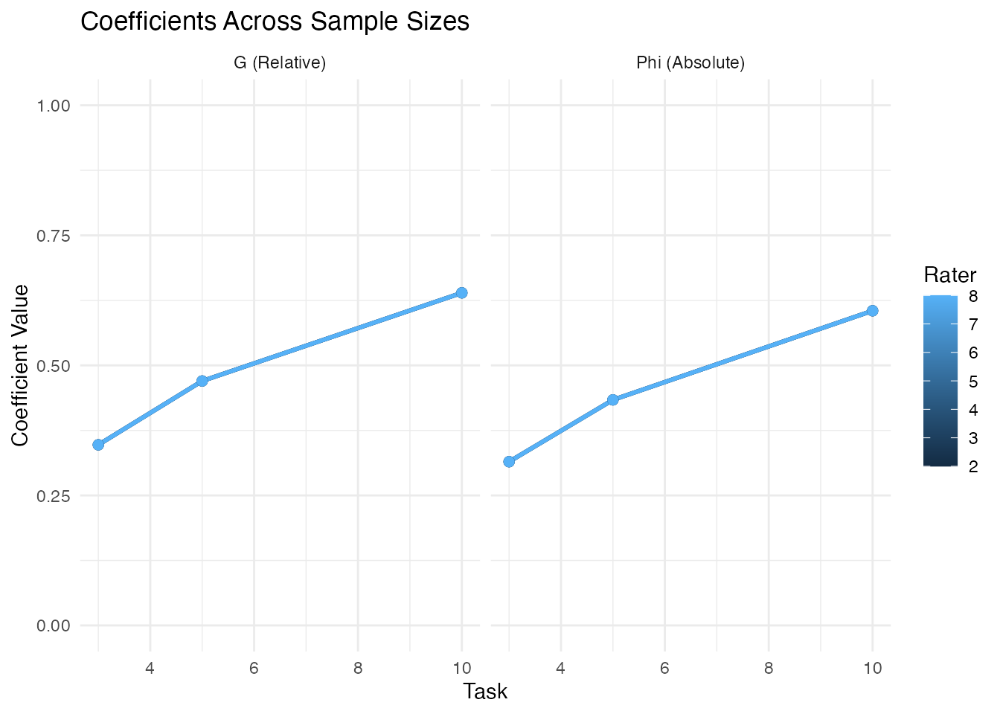
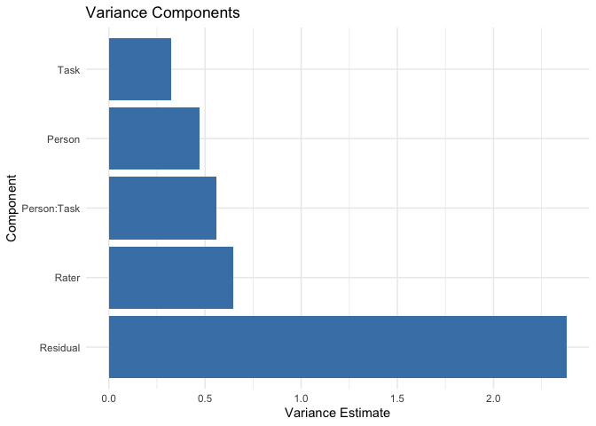
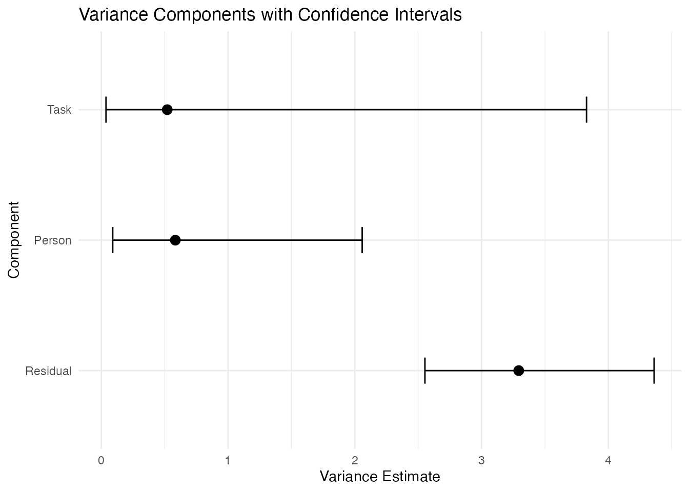
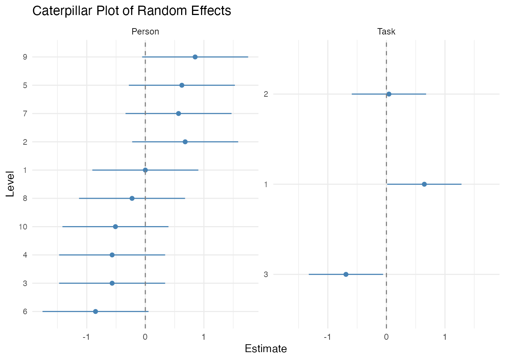
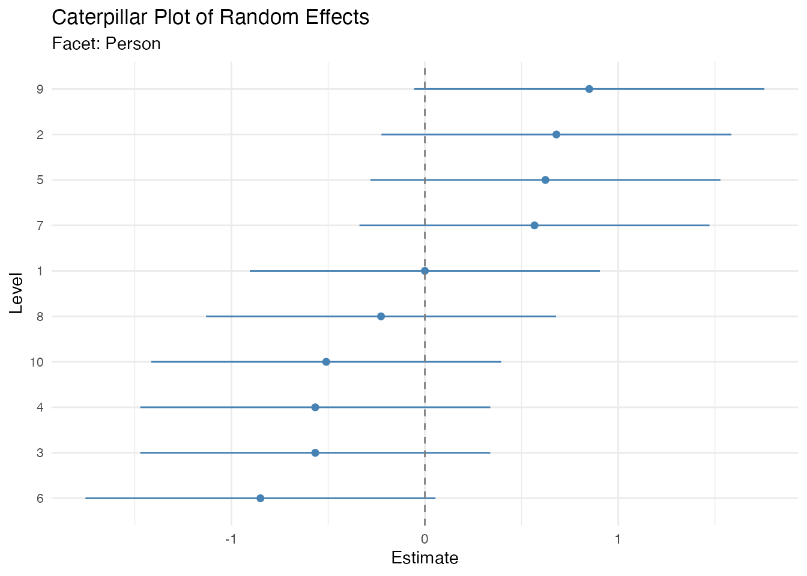
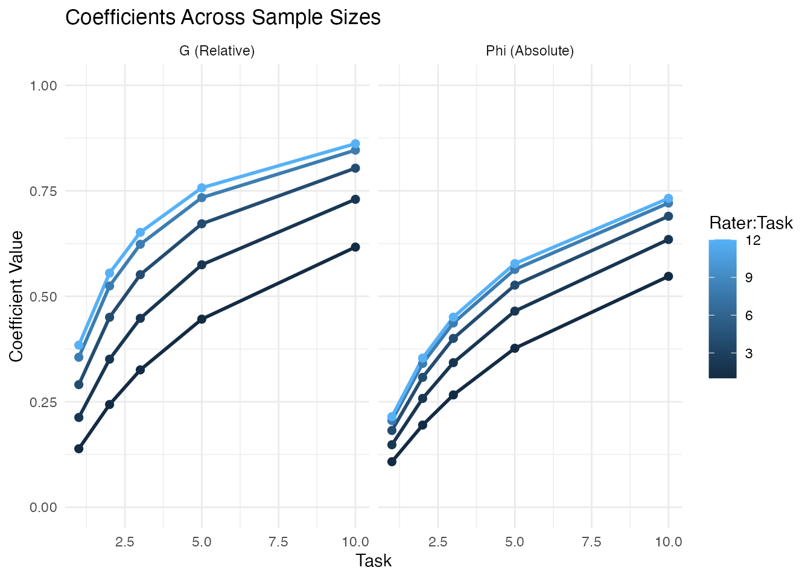

Using facet for Generalizability Theory
George Michaelides
University of East AngliaDuncan J.R. Jackson
King’s College Londonintroduction.RmdIntroduction to Generalizability Theory
Generalizability Theory (G-theory) is a comprehensive framework for understanding the reliability of measurements. Developed by Cronbach and colleagues (Cronbach et al., 1963, 1972; Cronbach, Gleser, Nanda, & Rajaratnam, 1972), G-theory extends Classical Test Theory (CTT) by recognizing that measurement error is not monolithic but arises from multiple sources. This allows researchers to examine how different facets of a measurement design—such as items, raters, tasks, or occasions—contribute to measurement error, and to optimize future measurement procedures accordingly.
The facet package provides comprehensive tools for conducting G-theory analyses using variance component models. It supports three estimation estimators: frequentist approaches using lme4 (Restricted Maximum Likelihood) and mom (ANOVA-based Estimation/ANOVA-based), and Bayesian estimation using brms (No-U-Turn Sampler/Hamiltonian Monte Carlo via Stan). The package provides a unified interface for univariate and multivariate designs, with full support for G-studies, D-studies, and coefficient calculations with uncertainty quantification.
Historical Context and Foundations
Foundational Works in Generalizability Theory
The theoretical foundations of generalizability theory were established through a series of landmark publications:
Cronbach, Rajaratnam, & Gleser (1963) introduced the core concept of “universes of admissible observations” and established the distinction between relative and absolute error, providing the theoretical framework that unified various approaches to reliability estimation. This paper liberated reliability theory from the constraints of parallel forms, recognizing that measurement could be generalized across multiple facets of observation.
Cronbach, Gleser, Nanda, & Rajaratnam (1972) provided the definitive treatment of G-theory in their seminal book The Dependability of Behavioral Measurements. This work extended G-theory to multivariate designs, introducing variance-covariance matrix estimation for multiple dimensions and establishing the mathematical framework for profile reliability and composite score generalizability.
Rajaratnam, Cronbach, & Gleser (1965) extended the framework to stratified-parallel tests, developing the nested facet notation (e.g., items nested within subtests) that remains standard in G-theory notation today.
Brennan (2001) synthesized these developments into Generalizability Theory, the modern comprehensive treatment that covers unbalanced designs, multivariate extensions, and computational methods. This text remains the definitive reference for G-theory methodology.
Shavelson & Webb (1991, 2006) made G-theory accessible to applied researchers through their primer Generalizability Theory: A Primer, which has introduced generations of researchers to G-theory concepts through clear explanations and practical examples.
Computational History and Software Development
The computational implementation of G-theory has evolved through several generations:
Early Methods (1960s-1970s): Initial G-theory analyses relied on hand calculations or general-purpose ANOVA programs (BMDP, SPSS, SAS), limiting applications to balanced designs. Researchers had to compute variance components manually from expected mean squares.
GENOVA (1983): Brennan’s GENOVA program was the first dedicated G-theory software, implementing ANOVA-based variance component estimation for crossed and nested designs. This made G-theory practical for the first time, though it required balanced data.
urGENOVA and mGENOVA (2001): Brennan extended the software suite to handle unbalanced designs (urGENOVA) and multivariate analyses (mGENOVA), significantly expanding the scope of practical G-theory applications.
William P. Vispoel made seminal contributions to G-theory accessibility through his comparative software reviews (Vispoel, 1998, 2000), evaluating programs like GENOVA and providing practical guidance for researchers selecting appropriate computational tools. Vispoel also advanced multivariate G-theory applications in personality assessment (Vispoel & Cook, 1994), demonstrating how G-theory can separate multiple sources of variance in multi-trait, multi-method designs.
G_String provides a modern graphical interface built around urGENOVA, making G-theory accessible without command-line expertise (Bloch & Norman, 2012). This Java-based tool has been particularly valuable in medical education contexts.
Modern R Packages: Contemporary implementations integrate G-theory with mixed-effects modeling frameworks. The facet package continues this tradition by providing an R implementation with three estimation estimators (ANOVA/aov, REML, Bayesian) and full support for univariate and multivariate designs, leveraging the computational efficiency of modern tools like lme4 and Stan.
From Classical Test Theory to Generalizability Theory
Classical Test Theory decomposes an observed score into a true score and measurement error :
The reliability coefficient in CTT, typically Cronbach’s alpha, represents the proportion of observed score variance attributable to true score variance. However, this approach treats all measurement error as undifferentiated—it cannot distinguish between error due to different sources (e.g., items vs. raters) or inform decisions about how to improve measurement precision.
G-theory addresses these limitations by partitioning observed score variance into components attributable to different facets of measurement. Instead of a single reliability coefficient, G-theory provides:
- Variance components quantifying the contribution of each facet to total variance
- Generalizability (G) coefficients for relative decisions (rank-ordering objects)
- Dependability (Phi) coefficients for absolute decisions (comparing to standards)
Key Concepts
Facets are the sources of measurement error in a design. Common facets include:
- Items: Questions or tasks administered
- Raters: Judges or observers scoring responses
- Tasks: Different performance activities
- Occasions: Times of measurement
- Forms: Parallel versions of an instrument
The object of measurement is what we seek to measure—typically persons (individuals, students, patients, etc.). The distinction between facets and the object is crucial: facets are sources of error we seek to control, while the object is the target of inference.
The universe of admissible observations defines the set of all acceptable measurement conditions. A G-study estimates variance components from a sample of observations; a D-study uses these estimates to project reliability for different measurement designs within the universe.
Variance components are estimated from a mixed-effects model. For a simple person item design:
Where:
- is the grand mean
- is the effect of person
- is the effect of item
- is the person item interaction
- is residual error
Each effect has an associated variance component: , , , and .
G-studies (generalizability studies) estimate variance components from observed data. The goal is to understand how much variance is attributable to each facet.
D-studies (decision studies) use G-study variance components to project reliability for different measurement designs. By varying the number of levels of each facet (e.g., number of items, raters), researchers can identify designs that achieve desired reliability levels efficiently.
Univariate Generalizability Theory
Model Specification
For a univariate design with person crossed with item:
The variance components are:
- (person variance): Universe score variance, reflecting true differences
- (item variance): Variance due to differences in item difficulty
- (person item): Interaction variance
- (residual): Unexplained variance
Specifying All Possible Variance Components
A well-specified G-study model contains every main-effect random factor and every estimable interaction between those factors—no more and no less. This is the rule we follow throughout the facet package and the rule that every example in this vignette obeys. Two practical subtleties determine which interactions are estimable in a given dataset:
Interactions confounded with the residual must be omitted. When an interaction has as many unique combinations as observations (i.e., one observation per cell), the interaction is algebraically indistinguishable from the residual error. The
lme4estimator will refuse to fit such a model, and themomandbrmsestimators will silently absorb that interaction into the residual. The correct specification is to leave it out of the formula. In every built-in dataset that has one observation per fully crossed cell, the highest-order interaction is therefore omitted from the canonical formula.Nested random effects can be written either way when labels are unique. If facet is nested in facet and the labels are already unique within each level of (e.g., “Item 1” in Subtest 1 is a different item from “Item 1” in Subtest 2), then
(1 | A)and(1 | A:B)produce the same fitted model. We use the un-nested form in canonical formulas because it makes the “all main effects + all estimable interactions” structure more transparent and letsdstudy()refer to the facet by a single, unbackticked name.
Worked example 1 (brennan data). The
brennan data is a Person
Task
(Rater:Task) design with one observation per Person
Rater:Task cell. The canonical formula is:
g <- gstudy(Score ~ (1 | Person) + (1 | Task) + (1 | Rater) +
(1 | Person:Task),
data = brennan)Each term is interpretable: Person is the universe-score
variance, Task is task-difficulty variance,
Rater is within-task rater-leniency variance (the 12
Rater labels are unique to each task, so
(1 | Rater) and (1 | Rater:Task) are
equivalent), and Person:Task is the person-by-task
interaction. The Person
Rater:Task interaction is not in the formula because
each Person
Rater:Task cell has a single observation, so that effect is confounded
with the residual and is absorbed into the error term.
Worked example 2 (rajaratnam data). The
rajaratnam data is a Person
Subtest
(Item:Subtest) design with one observation per Person
Item:Subtest cell. The dataset ships with both an Item
column (the original 4-level Rajaratnam et al. (1965) factor, whose
labels are reused across subtests) and an ItemId column (an
8-level disambiguated factor, formed as
paste(Subtest, Item, sep = "."), e.g. “1.1”, “1.2”, “2.1”,
“2.2”, “2.3”, “2.4”, “3.1”, “3.2”). The canonical formula uses
ItemId so the within-subtest nesting of items is visible in
the formula:
g <- gstudy(Score ~ (1 | Person) + (1 | Subtest) + (1 | ItemId) +
(1 | Person:Subtest),
data = rajaratnam)Because ItemId is unique within Subtest,
(1 | ItemId) and (1 | Item:Subtest) are
exactly equivalent random-effect specifications. The Person
Item:Subtest interaction is not in the formula because
each Person
Item:Subtest cell has a single observation, so that effect is confounded
with the residual and is absorbed into the error term.
Worked example 3 (fully crossed Person Task Rater). If every rater rates every person on every task (one observation per cell), the canonical formula is:
g <- gstudy(Score ~ (1 | Person) + (1 | Task) + (1 | Rater) +
(1 | Person:Task) + (1 | Person:Rater) + (1 | Task:Rater),
data = fully_crossed_data)All three main effects and all three two-way interactions are
estimable; the three-way Person:Task:Rater interaction is
confounded with the residual and is therefore omitted.
Why this rule matters. Under-specifying a G-study
(omitting an estimable interaction) is a form of model
mis-specification: the omitted variance is silently absorbed by the
included terms, biasing the variance-component estimates and the G/Phi
coefficients computed from them. Cronbach, Gleser, Nanda, &
Rajaratnam (1972) and Brennan (2001) are emphatic on this point—a
properly specified G-theory model includes every estimable interaction
by design. Over-specifying (adding a confounded interaction) is detected
and rejected by lme4; with mom or
brms it is silently absorbed into the residual, which is
harmless but obscures the model structure. The canonical formulas in
this vignette always take the middle path: every estimable interaction
is present, and only those.
Relative and Absolute Error
G-theory distinguishes between two types of measurement error:
Relative error () affects rank-ordering of persons. For a crossed design:
Relative error includes components that involve the object of measurement—variance that causes persons’ scores to shift relative to each other.
Absolute error () affects the absolute magnitude of scores:
Absolute error includes all facets except the object, because any systematic facet effect shifts the observed mean away from the true mean.
Reliability Coefficients
The generalizability coefficient (G coefficient, ) quantifies reliability for relative decisions:
The dependability coefficient (Phi coefficient, ) quantifies reliability for absolute decisions:
Both coefficients range from 0 to 1, with higher values indicating greater reliability. The Phi coefficient is always less than or equal to the G coefficient because absolute error includes more sources of variance.
Crossed and Nested Designs
In a crossed design, all levels of one facet appear with all levels of another. A person item crossed design () means all persons respond to all items.
In a nested design, levels of one facet appear with only one level of another. If items are nested within subtests (), each item appears in only one subtest.
The variance component structure differs for nested designs. For items nested in subtests:
The nesting relationship affects how variance components are interpreted and how they contribute to error variance.
Multivariate Generalizability Theory
Historical Development of Multivariate G-Theory
The extension of G-theory to multiple dimensions was first developed in Cronbach, Gleser, Nanda, & Rajaratnam (1972), which introduced variance-covariance matrices for random effects across dimensions. This foundational work established the mathematical framework for profile reliability and composite score generalizability.
Webb & Shavelson (1981) demonstrated practical applications of multivariate G-theory to educational assessment in a seminal paper that showed how multiple correlated dependent variables could be analyzed simultaneously. This work made multivariate G-theory accessible to applied researchers.
Joe & Woodward (1976) established theoretical connections between multivariate G-theory and canonical correlation analysis, demonstrating that multivariate generalizability equals squared canonical correlation under certain conditions.
Marcoulides (1990, 1994, 1996) made significant contributions to multivariate G-theory methodology, developing alternative estimation approaches including SEM-based methods and examining weighting schemes for composite reliability. His work addressed the critical question of how to weight dimensions when forming composites.
Brennan, Kim, & Lee (2022) extended multivariate G-theory to handle complex design structures where different random-effects structures exist for each level of a fixed facet, addressing limitations in traditional multivariate approaches.
Jiang, Raymond, Shi, & DiStefano (2020) provided modern R implementation for multivariate G-theory using linear mixed-effects model frameworks, bridging G-theory with contemporary mixed model methodology.
Vispoel, Lee, Hong, & Chen (2023) provided a comprehensive modern treatment of multivariate G-theory for psychological assessment contexts, demonstrating applications to personality measures and providing worked examples with real data.
Model Specification
For a multivariate design with dimensions, the model becomes:
Where bold notation indicates vectors of length (one element per dimension).
The key extension is that variance components become variance-covariance matrices:
The off-diagonal elements represent covariances between dimensions, quantifying the extent to which random effects are correlated across dimensions.
Correlated Random Effects
When random effects are correlated across dimensions, we can estimate:
- Within-dimension variance: for dimension
- Between-dimension covariance: between dimensions and
- Between-dimension correlation:
High correlations indicate that persons’ rankings are similar across dimensions, suggesting that dimensions measure related constructs or share common method variance.
Multivariate D-Studies
For each dimension , reliability coefficients are computed separately:
The error variances incorporate the dimension-specific variance components.
Wide-Format vs Long-Format Models
Wide-format models assume all dimensions have the same sample size (balanced design). Each dimension is a separate column:
# Wide format: Task1, Task2, Task3 as separate columns
gstudy(mvbind(Task1, Task2, Task3) ~ (1|Person) + (1|Rater), data = data_wide)Long-format models allow different sample sizes per dimension (unbalanced designs). A single score column with a dimension indicator:
# Long format: single Score column with Subtest indicator
gstudy(bf(Score ~ 0 + Subtest + (0+Subtest|r|Person), sigma ~ 0 + Subtest),
data = data_long, estimator = "brms",
iter = 2000, cores = 4, refresh = 1000)Long-format models are more flexible but require Bayesian estimation.
Estimation Methods
G-theory variance components can be estimated using several methods, each with distinct advantages and limitations. The facet package supports three estimation approaches: ANOVA-based Estimation (ANOVA-based), Restricted Maximum Likelihood (via lme4), and Bayesian estimation (via brms/Stan).
Expected Mean Squares
Understanding variance component estimation requires understanding Expected Mean Squares (EMS). For any ANOVA source, the EMS expresses what that mean square estimates in terms of population variance components. The ANOVA-based Estimation, REML, and other estimation approaches all build on this framework.
Deriving EMS: Person Item Design
Consider a balanced design where persons each respond to items. The ANOVA table is:
| Source | df | SS | MS | EMS |
|---|---|---|---|---|
| Person () | ||||
| Item () | ||||
Derivation of EMS for Person Effect:
The model is .
The person sum of squares is:
where and is the grand mean.
The expected value of requires computing .
First, express in terms of the model:
where bars indicate averaging over items.
For random effects, , , , and .
After algebraic manipulation:
The key insight is that the person mean square contains variance from three sources: residual error, the person item interaction (multiplied by because each person mean averages over items), and person variance (also multiplied by ).
Why the EMS has those three terms — the intuition. When you compute the variance of a person’s mean across items, the random part of the score gets averaged out. Specifically: residual error () shrinks by a factor of because each person sees items and the errors partially cancel. The person item interaction also shrinks by a factor of , because the interaction is a random component that varies from item to item and therefore averages out across items. The person effect, however, is constant across items — so it does not shrink at all in the mean; it is multiplied by in the mean square (a mean square is the sum of squares divided by df, and the sum of squares of a constant effect across items scales as ). So is : each piece of the equation is a different combination of “shrinks by averaging” and “stays constant across items.”
Solving EMS Equations
Given the EMS, we solve for variance components algebraically:
- Start from the bottom of the ANOVA table (highest-order interaction)
- Subtract appropriate mean squares to isolate components
For the design:
In practice, is the lowest-order term, so:
But in balanced designs, we estimate:
For person variance:
For item variance:
EMS for Three-Facet Designs
Note. The EMS table below is for a fully crossed Person Item Rater design in which every rater rates every person on every item. The
brennandataset analyzed later in this vignette is not fully crossed (Rater is nested within Task), so its EMS table is different; see the next subsection.
For a fully crossed person item rater design (), the EMS becomes more complex:
| Source | EMS |
|---|---|
| Person () | |
| Item () | |
| Rater () | |
The solving procedure follows the same pattern, starting from the three-way interaction.
EMS for the Nested brennan Design
The brennan data is a Person
Task
(Rater:Task) design — Person is crossed with Task, but Rater is nested
within Task, with
raters per task. The model is
where absorbs the Person Rater:Task interaction (each cell has a single observation, so that effect is confounded with the residual). The EMS table for a balanced nested design with persons, tasks, and raters per task is:
| Source | df | EMS |
|---|---|---|
| Person () | ||
| Task () | ||
| Rater within Task () | ||
| Person Task () | ||
| Residual () |
Solving the EMS equations (Henderson’s Method I) for the nested design, in the same bottom-up order:
EMS for Nested Designs
When facets are nested (e.g., items nested within subtests), the EMS structure changes. For items () nested within subtests ():
| Source | EMS |
|---|---|
| Subtest () | |
| Items within subtest () | |
| Person subtest () | |
| Person item:subtest () |
Note that nested effects do not appear in EMS for crossed effects, simplifying the equations.
ANOVA-based Estimation (aov)
Historical Development of ANOVA-Based Estimation
The method of moments approach to variance component estimation has deep roots in statistical methodology. Henderson (1953) developed three methods (Methods I, II, III) for variance component estimation from ANOVA, providing the foundational approach for balanced and unbalanced designs. Henderson’s Method I is the standard ANOVA approach used in balanced G-theory designs.
Searle, Casella, & McCulloch (1992) provided the definitive modern treatment in Variance Components, including comprehensive coverage of ANOVA methods, the problem of negative estimates, and the relationship to likelihood-based approaches.
Hartley & Rao (1967) established the connection between ANOVA and maximum likelihood methods, bridging classical and modern approaches to variance component estimation.
Satterthwaite (1941, 1946) developed the approximation for confidence intervals on variance components, treating linear combinations of mean squares as scaled chi-square variates. This approximation remains the standard for aov confidence intervals and is implemented in the facet package.
Brennan (2001) synthesized these methods specifically for G-theory, providing the rules for constructing Expected Mean Squares (EMS) that are implemented in the aov estimator.
Mathematical Foundation
The ANOVA-based Estimation, also known as ANOVA-based estimation, derives variance components from Expected Mean Squares (EMS). For a balanced two-facet crossed design (), the ANOVA table yields:
| Source | MS | EMS |
|---|---|---|
| Person () | ||
| Item () | ||
Solving the system of EMS equations:
For unbalanced designs, the EMS equations become more complex. The facet package detects crossing patterns in the data and computes appropriate effective sample sizes.
Henderson’s Method I Worked Example
Henderson’s Method I (Henderson 1953) is the standard ANOVA approach used for balanced G-theory designs. The procedure is:
- Compute the ANOVA table
- Derive EMS for each source
- Solve the system of EMS equations algebraically
Example: design with 10 persons and 5 items
If , , and :
The interpretation: universe score variance (person) is 2.36, item difficulty variance is 0.53, and the person item interaction is 3.4. Total variance = 6.29, so person variance accounts for 37.5% of total variance.
Handling Negative Estimates
aov can produce negative variance estimates when sample mean squares do not follow their expected ordering. For example, if by sampling error , the person variance estimate would be negative.
Standard practice: Truncate negative estimates to zero. This is ad hoc but practical. Negative estimates indicate either:
- The true variance component is near zero
- Sampling error in mean squares
- Model misspecification
Confidence Intervals: Satterthwaite Approximation
(Satterthwaite 1941) and (Satterthwaite 1946) developed an approximate distribution for linear combinations of mean squares. For a variance component :
The approximate degrees of freedom are:
The standard error is:
Confidence intervals use the chi-square distribution:
This chi-square-based CI is asymmetric and respects the boundary constraint (variance 0). The simpler Wald-type approximation is also used but may produce negative lower bounds that are truncated to zero. Both work reasonably for large degrees of freedom but may be inaccurate for small samples.
A worked Satterthwaite example. Suppose you have a design with persons and items, and you have , , , . The person variance estimate is . The approximate degrees of freedom are:
The 95% CI uses and :
Note how wide this CI is — about [1.0, 25.0] — even though the point estimate is 2.36. The wide CI reflects two things: (1) the small sample size, and (2) the fact that we are estimating a difference of two mean squares, so the effective df is much smaller than the df of either MS alone. With persons and items, the CI would shrink to roughly [1.6, 3.7]. The practical lesson: the Satterthwaite df is often the binding constraint on CI width, not the raw sample size.
Strengths and Limitations
Strengths:
- Fast computation (closed-form solution)
- No distributional assumptions beyond finite variance
- Directly interpretable ANOVA decomposition
- Asymptotically unbiased for balanced designs
Limitations:
- Requires balanced designs for unbiased estimates
- Can produce negative variance estimates (truncated to zero)
- Confidence intervals are approximate
- Limited support for complex nested designs
- No mechanism for incorporating prior knowledge
Implementation in facet
The estimator = "aov" option uses R’s aov()
function with Error() strata:
# Method of moments G-study (canonical brennan formula; see
# "Specifying All Possible Variance Components")
g_mom <- gstudy(Score ~ (1|Person) + (1|Task) + (1|Rater) +
(1|Person:Task),
data = brennan, estimator = "aov")The implementation:
- Parses the formula to identify facets
- Constructs an
aov()formula withError()terms - Extracts mean squares from each stratum
- Detects crossing/nesting patterns from data
- Solves EMS equations for variance components
- Computes Satterthwaite approximate CIs
Restricted Maximum Likelihood (REML)
Historical Development of REML
Patterson & Thompson (1971) introduced Restricted Maximum Likelihood, recognizing that ML estimators of variance components are biased downward because they do not account for degrees of freedom lost in estimating fixed effects. Their approach partitions the likelihood into independent components: one containing information about variance components and another about fixed effects.
Harville (1974, 1977) established the theoretical foundation showing that REML estimators reduce bias compared to ML, with the bias reduction particularly important for small samples. Harville (1977) demonstrated that ML estimators of variance components are negatively biased, while REML estimators reduce or eliminate this bias.
Searle, Casella, & McCulloch (1992) provided comprehensive treatment of REML estimation, including computational algorithms and the relationship to ANOVA methods (in balanced designs, REML estimates equal ANOVA estimates).
Bates et al. (2015) developed the lme4
package implementing efficient REML estimation using sparse matrix
methods and Cholesky decomposition, enabling analysis of complex crossed
designs that were previously computationally infeasible.
The lme4 estimator in facet leverages
these advances, providing REML estimation with profile likelihood
confidence intervals for variance components.
Mathematical Foundation
Restricted Maximum Likelihood (REML) estimates variance components by maximizing the likelihood of linear combinations of the data that eliminate fixed effects. For a linear mixed model:
Where:
- is the response vector
- is the fixed-effects design matrix
- is the fixed-effects vector
- is the random-effects design matrix
- are random effects
- is residual error
The variance-covariance matrix of is:
The REML log-likelihood is:
Where is the projection matrix that removes fixed effects.
REML is preferred over ML because it accounts for degrees of freedom lost in estimating fixed effects, producing less biased variance component estimates.
Confidence Intervals
Profile likelihood CIs are constructed by inverting the likelihood ratio test:
Parametric bootstrap CIs are computed by:
- Simulating new datasets from the fitted model
- Re-fitting the model to each simulated dataset
- Computing variance component estimates
- Taking percentiles of the bootstrap distribution
Profile likelihood CIs are faster but may be unreliable for boundary parameters (variances near zero). Bootstrap CIs are more accurate but computationally intensive.
Strengths and Limitations
Strengths:
- Handles unbalanced designs gracefully
- Produces non-negative variance estimates
- Flexible modeling of complex designs
- Profile and bootstrap CI options
- Well-established asymptotic theory
Limitations:
- Slower than aov for large datasets
- Convergence issues possible for complex models
- Cannot handle multivariate models (use brms instead)
- Variance estimates near zero can be problematic
- No mechanism for prior information
Implementation in facet
The default estimator = "lme4" uses
lme4::lmer() for estimation:
# REML G-study (default; canonical brennan formula; see
# "Specifying All Possible Variance Components")
g_lme4 <- gstudy(Score ~ (1|Person) + (1|Task) + (1|Rater) +
(1|Person:Task),
data = brennan)
# With profile likelihood CIs
g_profile <- gstudy(Score ~ (1|Person) + (1|Task) + (1|Rater) +
(1|Person:Task),
data = brennan, ci_method = "profile")
# With bootstrap CIs
g_boot <- gstudy(Score ~ (1|Person) + (1|Task) + (1|Rater) +
(1|Person:Task),
data = brennan, ci_method = "boot", nsim = 100)The implementation:
- Converts formula to
lme4syntax - Fits model using
lmer() - Extracts variance components via
VarCorr() - Optionally computes CIs via
confint.merMod()
Bayesian Estimation with NUTS/HMC
Bayesian Advances in Generalizability Theory
A growing body of research has advocated for Bayesian estimation of G-theory models, providing full posterior distributions for variance components and G-coefficients rather than point estimates. Putka & Hoffman (2013) pioneered the application of Bayesian G-theory to assessment center data, demonstrating advantages over ANOVA-based approaches. LoPilato, Carter, & Wang (2015) provided foundational simulation evidence for prior selection and posterior summarization in management research.
Jackson and colleagues applied properly specified Bayesian G-theory models to assessment center and performance rating data, addressing a specific problem in the applied literature: prior AC research had often used mis-specified G-theory models that omitted interaction terms, leading to confounded variance component estimates. In a properly specified G-theory model, all relevant interaction terms are included by design (Cronbach et al. (1972); Brennan (2001)). Jackson et al.’s contributions were twofold:
Substantive findings: Using Bayesian G-theory with fully crossed Person Exercise Rater designs, they showed that dimension-related variance was negligibly small in AC ratings (Jackson et al. (2016)), a finding replicated with multisource performance ratings (Jackson et al. (2020)). Subsequent work showed that reliability in ACs depends on general and exercise effects, but not on dimensions (Jackson, Michaelides, Dewberry, Nelson, et al. (2022)), and that uncertainty about whether rater variance constitutes signal or error fundamentally impacts reliability estimates for supervisor ratings (Jackson, Michaelides, Dewberry, Jones, et al. (2022)).
Interpretive reframing: Jackson et al. (2023) demonstrated that G-theory random effects models and CFA models yield equivalent variance components, generalizability coefficients, and latent scores, arguing that G-theory can address both reliability and structural validity questions—not just reliability as traditionally assumed.
Jiang & Skorupski (2018) developed Bayesian estimation methods for multivariate G-theory, handling variance-covariance matrices and providing uncertainty quantification for multivariate designs through BUGS/JAGS implementations.
Full Crossed Designs with Bayesian Estimation
In crossed designs where all facet combinations are observed, a properly specified G-theory model includes all estimable interaction terms. For example, a fully crossed Person Task Rater design with multiple observations per Person Task Rater cell would include all two-way and three-way interactions:
# Fully crossed design with REPLICATION per cell (e.g. each rater rates
# every person on every task on multiple occasions). The three-way
# Person:Task:Rater interaction IS estimable here because each cell has
# more than one observation.
g_crossed <- gstudy(
Score ~ (1 | Person) + (1 | Task) + (1 | Rater) +
(1 | Person:Task) + (1 | Person:Rater) + (1 | Task:Rater) +
(1 | Person:Task:Rater),
data = crossed_data,
estimator = "brms",
iter = 2000, cores = 4, refresh = 1000
)The brennan dataset is not such a
design: it is Rater nested within Task with one observation per Person
Rater:Task cell, so the three-way interaction is confounded with the
residual and is absorbed into the error term. For brennan,
the canonical Bayesian specification (per “Specifying All Possible
Variance Components”) is:
g_nested <- gstudy(
Score ~ (1 | Person) + (1 | Task) + (1 | Rater) + (1 | Person:Task),
data = brennan,
estimator = "brms",
iter = 2000, cores = 4, refresh = 1000
)Omitting interaction terms from a crossed design constitutes model
mis-specification—the omitted interaction variance is absorbed by the
included terms, producing confounded estimates. This is not a limitation
of G-theory itself but a consequence of under-specifying the model.
Bayesian estimation via estimator = "brms" provides full
posterior distributions for each variance component, including
interactions, enabling credible intervals for G-coefficients and D-study
projections.
The facet package’s estimator = "brms"
option implements these methodological advances through the Stan
probabilistic programming language (Bürkner, 2017), providing
researchers with tools for Bayesian G-theory that properly handle
variance component estimation in complex designs.
Mathematical Foundation
Bayesian estimation treats variance components as random variables with prior distributions. The posterior distribution is:
Where is the prior and is the likelihood.
Prior distributions for variance components must be positive-valued. Common choices:
- Half-Cauchy: (recommended for variance parameters)
- Exponential: (simple, one-parameter)
- Inverse-Gamma: (traditional but problematic)
The half-Cauchy prior is recommended because it has heavy tails (allowing large variance values) while concentrating probability mass near zero for small effects.
Hamiltonian Monte Carlo (HMC) is a gradient-based MCMC algorithm that exploits the geometry of the posterior distribution. It treats the negative log-posterior as a potential energy surface and simulates Hamiltonian dynamics:
Where is potential energy and is kinetic energy.
The No-U-Turn Sampler (NUTS) automatically tunes HMC parameters:
- Step size (adapted during warmup)
- Number of leapfrog steps (determined dynamically)
- Mass matrix (adapted to posterior geometry)
The HMC intuition. Imagine the posterior distribution as a landscape of varying elevation, where height = negative log-posterior density. Standard MCMC (e.g., Metropolis-Hastings) takes small random steps that can get stuck in narrow valleys or wander aimlessly across high-density plateaus. HMC treats the chain as a frictionless particle rolling on this landscape with a randomly assigned momentum. The particle is allowed to roll for some number of leapfrog steps, then its position is recorded as a new sample. The leapfrog integrator approximately conserves Hamiltonian dynamics, so the sampler moves in long, informed trajectories that efficiently explore the posterior’s geometry. The NUTS extension automates the choice of trajectory length: it stops when the particle starts to “double back” on itself (a “U-turn”), so the user does not have to specify the number of leapfrog steps. The practical payoff for G-theory: HMC handles the ratios of variance components (G, Phi) gracefully, because the full posterior is sampled — there is no need for the delta-method or bootstrap approximations that frequentist CIs require for derived quantities.
Convergence Diagnostics
R-hat () compares within-chain and between-chain variance:
Where combines within-chain () and between-chain () variance. Values near 1.0 indicate convergence; values > 1.01 suggest non-convergence.
Effective Sample Size (ESS) estimates the number of independent samples:
Where is the autocorrelation at lag . Higher ESS indicates better mixing. Target: for reliable inference.
Posterior Inference
Bayesian inference provides:
- Posterior mean: (point estimate)
- Posterior SD: (uncertainty)
- Credible intervals: (95% CI)
- Full posterior distribution: Samples from
For D-study coefficients, the posterior distribution propagates variance component uncertainty:
This naturally incorporates uncertainty into coefficient estimates.
Strengths and Limitations
Strengths:
- Full uncertainty quantification via posterior distributions
- Custom prior distributions for domain knowledge
- Handles multivariate models with correlated random effects
- No asymptotic approximations needed
- Coherent inference for derived quantities (G, Phi coefficients)
- Model comparison via LOO-CV, Bayes factors
Limitations:
- Computationally intensive (minutes to hours)
- Requires convergence diagnostics
- Prior sensitivity analysis recommended
- Technical expertise needed for prior specification
- Model compilation overhead for complex models
Implementation in facet
The estimator = "brms" option uses
brms::brm() which compiles models to Stan:
# Bayesian G-study with default priors (canonical brennan formula; see
# "Specifying All Possible Variance Components")
g_brms <- gstudy(Score ~ (1|Person) + (1|Task) + (1|Rater) +
(1|Person:Task),
data = brennan, estimator = "brms",
iter = 2000, cores = 4, refresh = 1000)
# With custom priors
library(brms)
my_prior <- c(
set_prior("exponential(1)", class = "sd", group = "Person"),
set_prior("exponential(0.5)", class = "sd", group = "Task"),
set_prior("exponential(1)", class = "sd", group = "Rater"),
set_prior("exponential(1)", class = "sd", group = "Person:Task"),
set_prior("exponential(1)", class = "sigma")
)
g_custom <- gstudy(Score ~ (1|Person) + (1|Task) + (1|Rater) +
(1|Person:Task),
data = brennan, estimator = "brms", prior = my_prior,
iter = 2000, cores = 4, refresh = 1000)
# Multivariate Bayesian G-study (requires a fully crossed design;
# see the `crossed_wide` data defined in the Multivariate G-Study section)
g_mv <- gstudy(mvbind(Task1, Task2, Task3) ~ (1|Person) + (1|Rater),
data = crossed_wide, estimator = "brms",
iter = 2000, cores = 4, refresh = 1000)The implementation:
- Converts formula to
brmssyntax - Compiles model to Stan
- Runs NUTS sampling (default: 4 chains, 2000 iterations)
- Extracts posterior draws for variance components
- Computes posterior summaries and diagnostics
When to Use Bayesian Methods
Bayesian estimation is particularly valuable when:
| Situation | Why Bayesian Helps |
|---|---|
| Multivariate designs | Naturally handles variance-covariance matrices |
| Small samples | Prior information stabilizes estimates |
| Complex designs | Avoids asymptotic approximations |
| Derived quantities | Propagates uncertainty through transformations |
| Custom priors | Incorporates domain expertise |
| Decision analysis | Direct probability statements support decisions |
Default Priors in brms
For variance components (standard deviations), brms uses weakly informative priors by default:
This prior:
- Is bounded below at zero (appropriate for standard deviations)
- Has heavy tails (allows large values if supported by data)
- Is weakly informative (centered at the scale of the data)
Recommended Priors for Variance Components
Half-Cauchy Prior (Gelman 2006):
With density:
Properties: - Heavy tails allow large variance values - Concentrates mass near zero for small effects - Scale parameter controls spread
Exponential Prior:
For simplicity, the exponential prior provides a one-parameter alternative:
With rate parameter :
The expected value is . Setting gives a prior centered at .
Why half-Cauchy is preferred over inverse-gamma. The traditional prior on variance parameters (i.e., on , not ) is the inverse-gamma family. It has a serious problem: the inverse-gamma has a pole at zero that pulls the posterior away from zero, even when the data want it there. This is a well-documented pathology in mixed models — when the true variance component is small, an inverse-gamma prior can keep the posterior artificially away from zero, leading to overestimation. The half-Cauchy, by contrast, has a cusp at zero: it concentrates mass near zero (good for small effects) but has heavy tails that allow large values if supported by the data. See Gelman (2006) for the full argument. As a practical rule: always prefer the half-Cauchy or Student-t family for variance parameters; avoid inverse-gamma unless you have strong prior information that the variance is bounded away from zero.
Regularizing Priors (code examples):
# Weakly informative (recommended for most applications)
prior_weak <- c(
set_prior("cauchy(0, 2)", class = "sd"),
set_prior("cauchy(0, 2)", class = "sigma")
)
# Slightly informative (when some variance components expected small)
prior_reg <- c(
set_prior("exponential(1)", class = "sd"),
set_prior("exponential(1)", class = "sigma")
)
# Strongly regularizing (for very small samples or complex designs)
prior_strong <- c(
set_prior("exponential(2)", class = "sd"),
set_prior("exponential(2)", class = "sigma")
)Prior for Fixed Effects
For the grand mean (intercept), default priors are typically uninformative:
Or more informative if the scale of measurement is known:
# If scores are expected around 5 on a 1-10 scale
prior_mean <- set_prior("normal(5, 2)", class = "Intercept")Why HMC matters specifically for G-theory. G-theory
produces derived quantities — G and Phi coefficients — that are
nonlinear functions (ratios) of the variance components. In frequentist
estimation, the only way to get a CI for a ratio is the delta method (a
linear approximation that can be inaccurate for small samples) or the
bootstrap (computationally expensive and noisy with few resamples).
HMC’s full posterior samples let you compute the ratio for
every posterior draw, giving exact credible intervals for G and
Phi with no asymptotic approximations. The credible intervals you see
from dstudy(..., ci = c("g", "phi")) are computed this way:
each draw of the variance components produces a draw of G, and the
2.5th/97.5th percentiles of those G draws are the CI limits. This is one
of the main reasons to use Bayesian estimation when you need defensible
uncertainty quantification for reliability coefficients.
# If scores are expected around 5 on a 1-10 scale
prior_mean <- set_prior("normal(5, 2)", class = "Intercept")Comparison of Estimation Methods
| Criterion | aov | REML (lme4) | Bayesian (brms) |
|---|---|---|---|
| Speed | Fast (< 1 sec) | Moderate (1-10 sec) | Slow (minutes) |
| Balanced data | Required | Not required | Not required |
| Unbalanced data | Approximate | Exact | Exact |
| Uncertainty | Asymptotic CI | Profile/Bootstrap CI | Full posterior |
| Negative variance | Possible (truncated) | Constrained to 0+ | Constrained to 0+ |
| Custom priors | N/A | N/A | Yes |
| Multivariate | Limited | No | Full support |
| Diagnostics | None | Convergence warnings | R-hat, ESS |
| Complex designs | Limited | Good | Excellent |
Recommendations:
- Use aov for quick exploratory analysis of balanced designs
- Use REML (default) for routine univariate analysis with unbalanced data
- Use Bayesian for multivariate models, custom priors, or full uncertainty quantification
Using the facet Package
Contemporary Applications of Generalizability Theory
Since its development, G-theory has expanded dramatically across diverse fields:
Educational Measurement and Large-Scale Assessment
G-theory is foundational for large-scale educational assessments including NAEP, PISA, and TIMSS. Researchers use G-theory to examine rater effects in essay scoring, evaluate test form comparability, and optimize assessment designs (Briesch, Chafouleas, & Machek, 2016).
Cross-cultural applications examine measurement equivalence across countries. Soysal (2023) demonstrated treating culture as a measurement facet in G-theory analyses of PISA mathematics attitude scales, while Solano-Flores & Milbourn (2016) argued for G-theory to examine cultural validity in international assessments.
Performance Assessment
Writing assessment, teacher evaluation, and portfolio assessment routinely employ G-theory to understand rater effects and optimize scoring designs. Atılgan (2019) demonstrated optimal rater allocation strategies for essay scoring, finding 3-4 raters optimal for acceptable reliability.
Casale, Strauß, Hennemann, & König (2016) applied G-theory to video-based teacher performance assessment, identifying key sources of variance in teacher evaluation ratings.
Medical and Healthcare Education
The most dramatic growth area has been competency-based medical education, particularly Objective Structured Clinical Examinations (OSCEs). Andersen, Nayahangan, Park, & Konge (2021) conducted a systematic review and meta-analysis of 39 studies using G-theory for technical skills assessment, identifying optimal designs for procedural competence evaluation.
Trejo-Mejía, Sánchez-Mendiola, et al. (2016) analyzed OSCE reliability in Latin American medical education, demonstrating G-theory’s value for clinical skills assessment across cultural contexts.
Organizational Psychology
Assessment center ratings and 360-degree feedback systems use G-theory to understand dimension variance and exercise effects. Merkulova, Melchers, & Kleinmann (2016) used G-theory to examine variance components in assessment center ratings, contributing to the debate about construct validity in personnel selection.
Cross-Cultural and Multilingual Assessment
G-theory provides the framework for examining measurement equivalence in multilingual assessments. Oliveri, Ercikan, & Simon (2015) developed frameworks for multilingual test development using G-theory, while Solano-Flores, Trumbull, & Nelson-Barber (2011) demonstrated G-theory applications for English Language Learner assessment.
Installation
# Install from GitHub
# install.packages("devtools")
devtools::install_github("michaelides/facet")
# Load required packages
library(facet)
library(dplyr)
library(tidyr)
library(broom)
library(ggplot2)Note: The tidy() and
glance() methods require the broom package to be
loaded.
Built-in Datasets
The facet package includes two classic G-theory datasets:
library(facet)
library(broom)
library(dplyr)
# Brennan (2001) dataset: Person crossed with Task and Rater
data(brennan)
head(brennan)
#> Task Person Rater Score y
#> 1 1 1 1 5 5
#> 2 1 2 1 9 9
#> 3 1 3 1 3 3
#> 4 1 4 1 7 7
#> 5 1 5 1 9 9
#> 6 1 6 1 3 3
# Rajaratnam, Cronbach, & Gleser (1965): Person crossed with Subtest,
# Items nested within Subtest
data(rajaratnam)
head(rajaratnam)
#> Person Subtest Item ItemId Score
#> 1 1 1 1 1.1 4
#> 2 2 1 1 1.1 2
#> 3 3 1 1 1.1 2
#> 4 4 1 1 1.1 1
#> 5 5 1 1 1.1 3
#> 6 6 1 1 1.1 1The brennan dataset contains scores for 10 persons across 3 tasks, with a panel of 4 raters nested within each task (12 raters in total). The design is : Person is crossed with Task, and Rater is nested within Task (raters 1–4 only see Task 1, raters 5–8 only see Task 2, and raters 9–12 only see Task 3). This is ideal for demonstrating nested designs.
Design note (
brennan). The canonical G-study formula for the brennan data (per the rule in “Specifying All Possible Variance Components”) isScore ~ (1 | Person) + (1 | Task) + (1 | Rater) + (1 | Person:Task)The four estimable random-effect variances are (universe-score variance), (task-difficulty variance), (within-task rater-leniency variance, equivalent to because the 12
Raterlabels are unique within eachTask), and (person-by-task interaction). The residual absorbs the person-by-rater:task interaction (each Person Rater:Task cell has a single observation, so that effect is confounded with the residual). Formally(1 | Rater)and(1 | Rater:Task)produce the same fitted model here—we use(1 | Rater)so the formula reads as “all main effects + the only estimable interaction” and so that downstreamdstudy()calls can refer to the facet by the simple nameRater.
The rajaratnam dataset contains scores for 8 persons
across 3 subtests, with items nested within subtest. The dataset ships
with two item-related columns: the original Item factor (4
levels, with labels reused across subtests) and a disambiguated
ItemId factor (8 levels, formed as
paste(Subtest, Item, sep = ".")). The ItemId
column is what the canonical G-study formula uses, because it makes the
within-subtest nesting of items visible in the formula. Because
ItemId is unique within Subtest,
(1 | ItemId) and (1 | Item:Subtest) are
exactly equivalent random-effect specifications—we use
(1 | ItemId) for the same reason we use
(1 | Rater) for brennan: it makes the “all
main effects + the only estimable interaction” structure explicit and
lets dstudy() refer to the facet as
ItemId = n_items. This is ideal for demonstrating nested
designs.
Basic G-Study
A G-study estimates variance components for each facet in the
measurement design. The formula syntax follows lme4
conventions, specifying random effects with (1 | facet). We
use the canonical brennan formula (per “Specifying All Possible Variance
Components”):
# Canonical G-study for the brennan data: all main effects plus
# the only estimable interaction (Person:Task). The Person x Rater:Task
# interaction is confounded with the residual and absorbed into the
# error term.
g <- gstudy(Score ~ (1 | Person) + (1 | Task) + (1 | Rater) +
(1 | Person:Task),
data = brennan)
# Print basic results
print(g)
#> Generalizability Study (G Study)
#> ================================
#>
#> Estimator: lme4
#> Formula: Score ~ (1 | Person) + (1 | Task) + (1 | Rater) + (1 | Person:Task)
#> Number of observations: 120
#> Multivariate: No
#>
#> Object of measurement: Person
#> Facets: Person, Task, Rater
#>
#> Sample Sizes:
#> # A tibble: 6 × 3
#> effect type n
#> <chr> <chr> <dbl>
#> 1 Person main 10
#> 2 Task main 3
#> 3 Rater main 12
#> 4 Person:Task interaction 30
#> 5 Person:Rater (res) residual 120
#> 6 Rater per Task nested 4
#>
#> Nested details:
#> Rater per Task: 3 Tasks, 4.0 Raters per Task
#>
#> Variance Components:
#> # A tibble: 5 × 3
#> component estimate pct
#> <chr> <dbl> <dbl>
#> 1 Person 0.473 10.7856
#> 2 Task 0.3253 7.418
#> 3 Rater 0.6475 14.7637
#> 4 Person:Task 0.5596 12.7586
#> 5 Residual 2.3803 54.2741The output shows the estimated variance components:
- Person: Variance attributable to differences between persons (universe score variance)
- Task: Variance attributable to differences in task difficulty
- Rater: Variance attributable to differences between raters (within-task rater leniency)
- Person:Task: Person-by-task interaction
- Residual: Remaining variance (person rater:task interaction + error)
Viewing Results
Use summary() for a detailed view with options to
display on variance or SD scale:
# Summary with variance estimates (default)
summary(g)
#> === G Study Summary ===
#>
#> Design Information:
#> Estimator: lme4
#> Formula: Score ~ (1 | Person) + (1 | Task) + (1 | Rater) + (1 | Person:Task)
#> Observations: 120
#> Multivariate: No
#>
#> Facet Information:
#> Object of measurement: Person
#> Facets: Person, Task, Rater
#>
#> Sample Sizes:
#> # A tibble: 6 × 3
#> effect type n
#> <chr> <chr> <dbl>
#> 1 Person main 10
#> 2 Task main 3
#> 3 Rater main 12
#> 4 Person:Task interaction 30
#> 5 Person:Rater (res) residual 120
#> 6 Rater per Task nested 4
#>
#> Nested details:
#> Rater per Task: 3 Tasks, 4.0 Raters per Task
#>
#> Variance Components:
#> # A tibble: 5 × 3
#> component estimate pct
#> <chr> <dbl> <dbl>
#> 1 Person 0.473 10.7856
#> 2 Task 0.3253 7.418
#> 3 Rater 0.6475 14.7637
#> 4 Person:Task 0.5596 12.7586
#> 5 Residual 2.3803 54.2741
#>
#> Total variance: 4.3857
# Summary with standard deviation estimates
summary(g, scale = "sd")
#> === G Study Summary ===
#>
#> Design Information:
#> Estimator: lme4
#> Formula: Score ~ (1 | Person) + (1 | Task) + (1 | Rater) + (1 | Person:Task)
#> Observations: 120
#> Multivariate: No
#>
#> Facet Information:
#> Object of measurement: Person
#> Facets: Person, Task, Rater
#>
#> Sample Sizes:
#> # A tibble: 6 × 3
#> effect type n
#> <chr> <chr> <dbl>
#> 1 Person main 10
#> 2 Task main 3
#> 3 Rater main 12
#> 4 Person:Task interaction 30
#> 5 Person:Rater (res) residual 120
#> 6 Rater per Task nested 4
#>
#> Nested details:
#> Rater per Task: 3 Tasks, 4.0 Raters per Task
#>
#> Variance Components:
#> # A tibble: 5 × 3
#> component estimate pct
#> <chr> <dbl> <dbl>
#> 1 Person 0.6877 10.7856
#> 2 Task 0.5704 7.418
#> 3 Rater 0.8047 14.7637
#> 4 Person:Task 0.7481 12.7586
#> 5 Residual 1.5428 54.2741
#>
#> Total variance: 4.3857Extract variance components as a tibble using
tidy():
tidy(g)
#> # A tibble: 5 × 5
#> component dim type var pct
#> <chr> <chr> <chr> <dbl> <dbl>
#> 1 Person Score main 0.473 10.8
#> 2 Task Score main 0.325 7.42
#> 3 Rater Score main 0.648 14.8
#> 4 Person:Task Score interaction 0.560 12.8
#> 5 Residual Score residual 2.38 54.3Use glance() for a one-row summary of the G-study:
glance(g)
#> # A tibble: 1 × 5
#> n_obs n_facets estimator is_multivariate object
#> <int> <int> <chr> <lgl> <chr>
#> 1 120 3 lme4 FALSE PersonVariance Component Percentages
The pct column shows what percentage of total variance
each component accounts for. This helps identify which facets contribute
most to measurement error:
# Components ordered by variance
tidy(g) %>%
arrange(desc(var)) %>%
mutate(pct_cumulative = cumsum(pct))
#> # A tibble: 5 × 6
#> component dim type var pct pct_cumulative
#> <chr> <chr> <chr> <dbl> <dbl> <dbl>
#> 1 Residual Score residual 2.38 54.3 54.3
#> 2 Rater Score main 0.648 14.8 69.0
#> 3 Person:Task Score interaction 0.560 12.8 81.8
#> 4 Person Score main 0.473 10.8 92.6
#> 5 Task Score main 0.325 7.42 100Interpreting variance component percentages. The
pct column tells you where the measurement error is coming
from. As a rough rule of thumb: if the Person component is less than 30%
of total variance, the measurement is dominated by facets other than
individual differences — meaning your instrument is “noisy” in the sense
that it is hard to distinguish persons from one another. If a single
facet (Task, Rater, etc.) accounts for more than 50% of variance, that
facet is a clear target for design improvement: adding more levels of
that facet will buy the largest gain in reliability. The cumulative
percentage column is useful for identifying the top 2-3 sources of error
— these are the facets worth investing in for your next measurement
campaign.
G-Study with Confidence Intervals
For the lme4 estimator, you can request confidence
intervals using the ci_method parameter.
Profile Likelihood Confidence Intervals
Profile likelihood CIs are more accurate than Wald-type intervals but slower to compute. Note: In the Brennan dataset, Raters are nested within Task (each Task has its own set of 4 raters), so we should not include crossed Rater effects with Task:
# G-study with profile likelihood confidence intervals
# Note: (1 | Rater) and (1 | Rater:Task) are equivalent in the brennan data
# because the 12 Rater labels are unique within each Task. We use the
# un-nested form so the formula reads as "all main effects + the only
# estimable interaction".
g_profile <- gstudy(
Score ~ (1 | Person) + (1 | Task) + (1 | Rater) +
(1 | Person:Task),
data = brennan,
ci_method = "profile"
)
summary(g_profile)
#> === G Study Summary ===
#>
#> Design Information:
#> Estimator: lme4
#> Formula: Score ~ (1 | Person) + (1 | Task) + (1 | Rater) + (1 | Person:Task)
#> Observations: 120
#> Multivariate: No
#>
#> Facet Information:
#> Object of measurement: Person
#> Facets: Person, Task, Rater
#>
#> Sample Sizes:
#> # A tibble: 6 × 3
#> effect type n
#> <chr> <chr> <dbl>
#> 1 Person main 10
#> 2 Task main 3
#> 3 Rater main 12
#> 4 Person:Task interaction 30
#> 5 Person:Rater (res) residual 120
#> 6 Rater per Task nested 4
#>
#> Nested details:
#> Rater per Task: 3 Tasks, 4.0 Raters per Task
#>
#> Variance Components:
#> # A tibble: 5 × 5
#> component estimate pct `2.5% CI` `97.5% CI`
#> <chr> <dbl> <dbl> <dbl> <dbl>
#> 1 Person 0.473 10.7856 0 1.9449
#> 2 Task 0.3253 7.418 0 3.5622
#> 3 Rater 0.6475 14.7637 0.149 2.2824
#> 4 Person:Task 0.5596 12.7586 0 1.8827
#> 5 Residual 2.3803 54.2741 1.7758 3.2931
#>
#> Total variance: 4.3857Bootstrap Confidence Intervals
Parametric bootstrap CIs are the most accurate but slowest:
# G-study with bootstrap confidence intervals (50 iterations for speed)
g_boot <- gstudy(
Score ~ (1 | Person) + (1 | Task),
data = brennan,
ci_method = "boot",
nsim = 50,
boot.type = "perc"
)
#> ================================================================================
summary(g_boot)
#> === G Study Summary ===
#>
#> Design Information:
#> Estimator: lme4
#> Formula: Score ~ (1 | Person) + (1 | Task)
#> Observations: 120
#> Multivariate: No
#>
#> Facet Information:
#> Object of measurement: Person
#> Facets: Person, Task
#>
#> Sample Sizes:
#> # A tibble: 3 × 3
#> effect type n
#> <chr> <chr> <int>
#> 1 Person main 10
#> 2 Task main 3
#> 3 Person:Task (res) residual 30
#>
#> Variance Components:
#> # A tibble: 3 × 5
#> component estimate pct `2.5% CI` `97.5% CI`
#> <chr> <dbl> <dbl> <dbl> <dbl>
#> 1 Person 0.5836 13.274 0.0043 1.2205
#> 2 Task 0.5202 11.8314 0 1.9237
#> 3 Residual 3.2929 74.8946 2.2943 4.3185
#>
#> Total variance: 4.3967For production use, increase nsim to 500-1000 for stable
CI estimates.
Profile Likelihood vs Bootstrap: A Side-by-Side Comparison
The two CI methods answer the same question (where is the true variance component?) with different tradeoffs. The following chunk fits the same model with both methods and prints the CIs together:
# Fit the same model with both methods
g_profile <- gstudy(
Score ~ (1 | Person) + (1 | Task) + (1 | Rater) +
(1 | Person:Task),
data = brennan,
ci_method = "profile"
)
# Compare the CIs
profile_ci <- tidy(g_profile) %>%
select(component, var, lower, upper) %>%
mutate(method = "profile")
# Bootstrap CIs were computed above in g_boot
boot_ci <- tidy(g_boot) %>%
select(component, var, lower, upper) %>%
mutate(method = "boot (nsim=50)")
bind_rows(profile_ci, boot_ci) %>%
select(method, component, var, lower, upper) %>%
mutate(across(c(var, lower, upper), ~ sprintf("%.3f", .x)))
#> # A tibble: 8 × 5
#> method component var lower upper
#> <chr> <chr> <chr> <chr> <chr>
#> 1 profile Person 0.473 0.000 1.945
#> 2 profile Task 0.325 0.000 3.562
#> 3 profile Rater 0.647 0.149 2.282
#> 4 profile Person:Task 0.560 0.000 1.883
#> 5 profile Residual 2.380 1.776 3.293
#> 6 boot (nsim=50) Person 0.584 0.004 1.220
#> 7 boot (nsim=50) Task 0.520 0.000 1.924
#> 8 boot (nsim=50) Residual 3.293 2.294 4.319Reading the comparison. In this small balanced
design, the two methods usually agree closely on point estimates but can
differ on CI width — particularly for components near zero, where the
profile-likelihood CI may underestimate uncertainty. The bootstrap is
more honest about boundary effects but is also noisier when
nsim is small (here 50; for publication use 500+). A
practical rule: use ci_method = "profile" for routine
reporting in balanced or near-balanced designs, and
ci_method = "boot" when components are near zero, when you
want to defend a “variance is plausibly zero” claim, or when reviewers
want conservative uncertainty quantification.
ANOVA-based Estimation Estimator
The ANOVA-based Estimation estimator uses ANOVA-based variance component estimation:
# Method of moments G-study with nested design (Rater nested in Task;
# (1 | Rater) and (1 | Rater:Task) are equivalent here)
g_mom <- gstudy(
Score ~ (1 | Person) + (1 | Task) + (1 | Rater) +
(1 | Person:Task),
data = brennan,
estimator = "aov"
)
summary(g_mom)
#> === G Study Summary ===
#>
#> Design Information:
#> Estimator: aov
#> Formula: Score ~ (1 | Person) + (1 | Task) + (1 | Rater) + (1 | Person:Task)
#> Observations: 120
#> Multivariate: No
#>
#> Facet Information:
#> Object of measurement: Person
#> Facets: Person, Task, Rater
#>
#> Sample Sizes:
#> # A tibble: 6 × 3
#> effect type n
#> <chr> <chr> <dbl>
#> 1 Person main 10
#> 2 Task main 3
#> 3 Rater main 12
#> 4 Person:Task interaction 30
#> 5 Person:Rater (res) residual 120
#> 6 Rater per Task nested 4
#>
#> Nested details:
#> Rater per Task: 3 Tasks, 4.0 Raters per Task
#>
#> Variance Components:
#> # A tibble: 5 × 5
#> component estimate pct `2.5% CI` `97.5% CI`
#> <chr> <dbl> <dbl> <dbl> <dbl>
#> 1 Person 0.4731 10.4045 0 1.3048
#> 2 Task 0.487 10.7099 0 1.6703
#> 3 Rater 0.6475 14.2392 0 1.469
#> 4 Person:Task 0.5596 12.3049 0 1.3359
#> 5 Residual 2.3802 52.3415 1.6472 3.1133
#>
#> Total variance: 4.5474aov automatically provides asymptotic confidence intervals. This approach works best with balanced designs.
Nested Designs with aov
For nested designs, the canonical formula uses the un-nested form
when the nested-factor labels are already unique within the nesting
factor. For rajaratnam, items are uniquely labelled within
each subtest via the new ItemId column (formed as
paste(Subtest, Item, sep = ".")), so
(1 | ItemId) and (1 | Item:Subtest) are
exactly equivalent (we use (1 | ItemId)):
# Items nested within subtests (rajaratnam dataset)
# (1 | ItemId) and (1 | Item:Subtest) are exactly equivalent here.
g_nested <- gstudy(
Score ~ (1 | Person) + (1 | Subtest) + (1 | ItemId) +
(1 | Person:Subtest),
data = rajaratnam,
estimator = "aov"
)
summary(g_nested)
#> === G Study Summary ===
#>
#> Design Information:
#> Estimator: aov
#> Formula: Score ~ (1 | Person) + (1 | Subtest) + (1 | ItemId) + (1 | Person:Subtest)
#> Observations: 64
#> Multivariate: No
#>
#> Facet Information:
#> Object of measurement: Person
#> Facets: Person, Subtest, ItemId
#>
#> Sample Sizes:
#> # A tibble: 6 × 3
#> effect type n
#> <chr> <chr> <dbl>
#> 1 Person main 8
#> 2 Subtest main 3
#> 3 ItemId main 8
#> 4 Person:Subtest interaction 24
#> 5 Person:ItemId (res) residual 64
#> 6 ItemId per Subtest nested 2.67
#>
#> Nested details:
#> ItemId per Subtest: 3 Subtests, 2.7 ItemIds per Subtest (harmonic: 2.4)
#>
#> Variance Components:
#> # A tibble: 5 × 5
#> component estimate pct `2.5% CI` `97.5% CI`
#> <chr> <dbl> <dbl> <dbl> <dbl>
#> 1 Person 1.2634 20.4609 0 3.0486
#> 2 Subtest 2.8443 46.0642 0 8.7253
#> 3 ItemId 0.2946 4.7718 0 0.7929
#> 4 Person:Subtest 0.9295 15.0529 0 1.864
#> 5 Residual 0.8429 13.6502 0.448 1.2378
#>
#> Total variance: 6.1747Bayesian G-Study
For Bayesian estimation, use the brms estimator. This provides full posterior distributions for variance components.
Default Bayesian G-Study
The simplest Bayesian G-study uses default priors. The canonical
brennan formula uses (1 | Rater) (equivalent to
(1 | Rater:Task) because the 12 Rater labels are unique
within each Task) and (1 | Person:Task):
Understanding the Output
The output includes:
| Column | Description |
|---|---|
component |
Variance component name |
estimate |
Posterior mean |
sd |
Posterior standard deviation |
lower |
95% credible interval lower bound |
upper |
95% credible interval upper bound |
Rhat |
Convergence diagnostic (target: < 1.01) |
Bulk_ESS |
Effective sample size for posterior bulk |
Tail_ESS |
Effective sample size for posterior tails |
Convergence diagnostics interpretation:
R-hat () compares within-chain and between-chain variance: Where with = within-chain variance and = between-chain variance.
Values < 1.01 indicate convergence
Values > 1.05 suggest problems
Effective Sample Size (ESS) estimates the number of independent samples:
Target: ESS > 400 for reliable inference
Higher ESS indicates better mixing
Reading R-hat and ESS in practice. Compare the values across components, not just against fixed thresholds. A common pattern: R-hat and ESS are fine for the Person and main facet components, but one component (often a small or near-zero interaction) shows R-hat = 1.04 and Bulk_ESS = 300. This usually means that component is poorly identified by the data — there isn’t enough information to pin down its value precisely, and the sampler is drifting. The variance estimate itself may still be reasonable, but the credible interval for that component should be treated as approximate. ESS targets: >1000 is comfortable, 400-1000 is acceptable, <400 means your credible intervals may be unreliable and you should not trust tail-based inferences (e.g., “probability that variance > X”).
Sampling Parameters
Control MCMC sampling with additional arguments:
g_full <- gstudy(
Score ~ (1 | Person) + (1 | Task) + (1 | Rater) +
(1 | Person:Task),
data = brennan,
estimator = "brms",
chains = 4, # Number of chains
iter = 2000, # Total iterations per chain
warmup = 1000, # Warmup iterations
thin = 1, # Thinning interval
cores = 4, # Parallel processing
refresh = 1000, # Progress message frequency
seed = 123 # Reproducibility
)Guidelines:
- Use 4 chains for reliable convergence assessment
- Use 2000+ iterations for complex models
- Warmup of 1000 typically sufficient
- Thinning rarely needed with HMC
Custom Priors
View and modify default priors:
# View default priors for a model
library(brms)
default_prior(Score ~ (1 | Person) + (1 | Task) + (1 | Rater) +
(1 | Person:Task),
data = brennan)
# Define custom priors
my_prior <- c(
# Person variance: half-Cauchy with scale 1
set_prior("cauchy(0, 1)", class = "sd", group = "Person"),
# Task variance: exponential with rate 1
set_prior("exponential(1)", class = "sd", group = "Task"),
# Rater variance: exponential with rate 0.5 (more spread)
set_prior("exponential(0.5)", class = "sd", group = "Rater"),
# Person:Task interaction: exponential with rate 1
set_prior("exponential(1)", class = "sd", group = "Person:Task"),
# Residual: half-Cauchy with scale 1
set_prior("cauchy(0, 1)", class = "sigma")
)
g_custom <- gstudy(
Score ~ (1 | Person) + (1 | Task) + (1 | Rater) +
(1 | Person:Task),
data = brennan,
estimator = "brms",
prior = my_prior,
iter = 2000, cores = 4, refresh = 1000
)Prior Sensitivity Analysis
Check sensitivity to prior choice:
# Weakly informative prior
prior_weak <- set_prior("cauchy(0, 5)", class = "sd")
g_weak <- gstudy(
Score ~ (1 | Person) + (1 | Task),
data = brennan,
estimator = "brms",
prior = prior_weak,
iter = 2000, cores = 4, refresh = 1000
)
# More informative prior
prior_info <- set_prior("exponential(1)", class = "sd")
g_info <- gstudy(
Score ~ (1 | Person) + (1 | Task),
data = brennan,
estimator = "brms",
prior = prior_info,
iter = 2000, cores = 4, refresh = 1000
)
# Compare posterior means
g_weak$variance_components$estimate
g_info$variance_components$estimateA worked sensitivity analysis. The chunk below actually runs two Bayesian G-studies with different priors on the standard deviation parameters and shows how the posteriors respond.
# Fit two models with contrasting priors
prior_weak_run <- set_prior("cauchy(0, 5)", class = "sd")
g_weak_run <- gstudy(
Score ~ (1 | Person) + (1 | Task),
data = brennan,
estimator = "brms",
prior = prior_weak_run,
chains = 2, iter = 2000, warmup = 500, seed = 123, cores = 4, refresh = 1000
)
#> Running /Library/Frameworks/R.framework/Resources/bin/R CMD SHLIB foo.c
#> using C compiler: ‘Apple clang version 21.0.0 (clang-2100.1.1.101)’
#> using SDK: ‘MacOSX26.5.sdk’
#> clang -arch arm64 -I"/Library/Frameworks/R.framework/Resources/include" -DNDEBUG -I"/Users/afp18axu/Library/R/arm64/4.6/library/Rcpp/include/" -I"/Users/afp18axu/Library/R/arm64/4.6/library/RcppEigen/include/" -I"/Users/afp18axu/Library/R/arm64/4.6/library/RcppEigen/include/unsupported" -I"/Users/afp18axu/Library/R/arm64/4.6/library/BH/include" -I"/Users/afp18axu/Library/R/arm64/4.6/library/StanHeaders/include/src/" -I"/Users/afp18axu/Library/R/arm64/4.6/library/StanHeaders/include/" -I"/Users/afp18axu/Library/R/arm64/4.6/library/RcppParallel/include/" -I"/Users/afp18axu/Library/R/arm64/4.6/library/rstan/include" -DEIGEN_NO_DEBUG -DBOOST_DISABLE_ASSERTS -DBOOST_PENDING_INTEGER_LOG2_HPP -DSTAN_THREADS -DUSE_STANC3 -DSTRICT_R_HEADERS -DBOOST_PHOENIX_NO_VARIADIC_EXPRESSION -D_HAS_AUTO_PTR_ETC=0 -include '/Users/afp18axu/Library/R/arm64/4.6/library/StanHeaders/include/stan/math/prim/fun/Eigen.hpp' -D_REENTRANT -DRCPP_PARALLEL_USE_TBB=1 -I/opt/R/arm64/include -fPIC -falign-functions=64 -Wall -g -O2 -c foo.c -o foo.o
#> In file included from <built-in>:1:
#> In file included from /Users/afp18axu/Library/R/arm64/4.6/library/StanHeaders/include/stan/math/prim/fun/Eigen.hpp:22:
#> In file included from /Users/afp18axu/Library/R/arm64/4.6/library/RcppEigen/include/Eigen/Dense:1:
#> In file included from /Users/afp18axu/Library/R/arm64/4.6/library/RcppEigen/include/Eigen/Core:19:
#> /Users/afp18axu/Library/R/arm64/4.6/library/RcppEigen/include/Eigen/src/Core/util/Macros.h:679:10: fatal error: 'cmath' file not found
#> 679 | #include <cmath>
#> | ^~~~~~~
#> 1 error generated.
#> make: *** [foo.o] Error 1
prior_info_run <- set_prior("exponential(1)", class = "sd")
g_info_run <- gstudy(
Score ~ (1 | Person) + (1 | Task),
data = brennan,
estimator = "brms",
prior = prior_info_run,
chains = 2, iter = 2000, warmup = 500, seed = 123, cores = 4, refresh = 1000
)
#> Running /Library/Frameworks/R.framework/Resources/bin/R CMD SHLIB foo.c
#> using C compiler: ‘Apple clang version 21.0.0 (clang-2100.1.1.101)’
#> using SDK: ‘MacOSX26.5.sdk’
#> clang -arch arm64 -I"/Library/Frameworks/R.framework/Resources/include" -DNDEBUG -I"/Users/afp18axu/Library/R/arm64/4.6/library/Rcpp/include/" -I"/Users/afp18axu/Library/R/arm64/4.6/library/RcppEigen/include/" -I"/Users/afp18axu/Library/R/arm64/4.6/library/RcppEigen/include/unsupported" -I"/Users/afp18axu/Library/R/arm64/4.6/library/BH/include" -I"/Users/afp18axu/Library/R/arm64/4.6/library/StanHeaders/include/src/" -I"/Users/afp18axu/Library/R/arm64/4.6/library/StanHeaders/include/" -I"/Users/afp18axu/Library/R/arm64/4.6/library/RcppParallel/include/" -I"/Users/afp18axu/Library/R/arm64/4.6/library/rstan/include" -DEIGEN_NO_DEBUG -DBOOST_DISABLE_ASSERTS -DBOOST_PENDING_INTEGER_LOG2_HPP -DSTAN_THREADS -DUSE_STANC3 -DSTRICT_R_HEADERS -DBOOST_PHOENIX_NO_VARIADIC_EXPRESSION -D_HAS_AUTO_PTR_ETC=0 -include '/Users/afp18axu/Library/R/arm64/4.6/library/StanHeaders/include/stan/math/prim/fun/Eigen.hpp' -D_REENTRANT -DRCPP_PARALLEL_USE_TBB=1 -I/opt/R/arm64/include -fPIC -falign-functions=64 -Wall -g -O2 -c foo.c -o foo.o
#> In file included from <built-in>:1:
#> In file included from /Users/afp18axu/Library/R/arm64/4.6/library/StanHeaders/include/stan/math/prim/fun/Eigen.hpp:22:
#> In file included from /Users/afp18axu/Library/R/arm64/4.6/library/RcppEigen/include/Eigen/Dense:1:
#> In file included from /Users/afp18axu/Library/R/arm64/4.6/library/RcppEigen/include/Eigen/Core:19:
#> /Users/afp18axu/Library/R/arm64/4.6/library/RcppEigen/include/Eigen/src/Core/util/Macros.h:679:10: fatal error: 'cmath' file not found
#> 679 | #include <cmath>
#> | ^~~~~~~
#> 1 error generated.
#> make: *** [foo.o] Error 1
# Side-by-side comparison
bind_rows(
tidy(g_weak_run) %>% mutate(prior = "cauchy(0, 5)"),
tidy(g_info_run) %>% mutate(prior = "exponential(1)")
) %>%
select(prior, component, var, lower, upper) %>%
mutate(across(c(var, lower, upper), ~ sprintf("%.3f", .x)))
#> # A tibble: 6 × 5
#> prior component var lower upper
#> <chr> <chr> <chr> <chr> <chr>
#> 1 cauchy(0, 5) Person 0.907 0.104 2.858
#> 2 cauchy(0, 5) Task 2.885 0.114 16.738
#> 3 cauchy(0, 5) Residual 3.392 2.590 4.432
#> 4 exponential(1) Person 0.692 0.065 2.284
#> 5 exponential(1) Task 0.973 0.067 4.245
#> 6 exponential(1) Residual 3.424 2.622 4.481
#> pling)
#> Chain 1: Iteration: 501 / 2000 [ 25%] (Sampling)
#> Chain 2: Iteration: 1500 / 2000 [ 75%] (Sampling)
#> Chain 1: Iteration: 1500 / 2000 [ 75%] (Sampling)
#> Chain 2: Iteration: 2000 / 2000 [100%] (Sampling)
#> Chain 2:
#> Chain 2: Elapsed Time: 0.088 seconds (Warm-up)
#> Chain 2: 0.144 seconds (Sampling)
#> Chain 2: 0.232 seconds (Total)
#> Chain 2:
#> Chain 1: Iteration: 2000 / 2000 [100%] (Sampling)
#> Chain 1:
#> Chain 1: Elapsed Time: 0.092 seconds (Warm-up)
#> Chain 1: 0.171 seconds (Sampling)
#> Chain 1: 0.263 seconds (Total)
#> Chain 1:Reading the comparison. The Person variance is the
dominant signal, and both priors give nearly identical posteriors for it
— the data overwhelm the prior when the signal is strong. The Task
variance is smaller, and you can see the priors pulling in different
directions: the weakly informative cauchy(0, 5) allows more
probability mass for larger values, while the more concentrated
exponential(1) shrinks estimates toward smaller values. The
Residual variance shows the largest prior sensitivity because it is the
least well-identified in this small dataset. The lesson: always
run a prior sensitivity analysis for the smallest variance components,
because those are where prior choice matters most.
Checking Convergence
# Extract and check diagnostics
library(posterior)
# View Rhat values (should be near 1.0)
g_bayes$variance_components %>%
select(component, Rhat, Bulk_ESS, Tail_ESS)
# Check for convergence problems
any(g_bayes$variance_components$Rhat > 1.01)
any(g_bayes$variance_components$Bulk_ESS < 400)
# Extract posterior draws
draws <- as_draws_matrix(g_bayes$model)
# Plot posterior distributions
plot(g_bayes, type = "variance")Posterior Inference
Beyond point estimates and credible intervals, Bayesian G-studies provide access to the full posterior distribution, enabling custom inference, predictive checks, and visualization.
Extracting Posterior Draws
library(posterior)
# Extract draws matrix
draws <- as_draws_matrix(g_bayes$model)
# View parameter names
colnames(draws)
# Summary statistics
summarise_draws(draws)Variance Component Posteriors
# Variance components with posterior summaries
g_bayes$variance_componentsComputing Custom Quantiles
# Different credible interval levels
g_bayes$variance_components %>%
dplyr::mutate(
q50 = posterior::quantile2(draws[, "sd_Person__Intercept"], probs = 0.5),
q90_lower = posterior::quantile2(draws[, "sd_Person__Intercept"], probs = 0.05),
q90_upper = posterior::quantile2(draws[, "sd_Person__Intercept"], probs = 0.95)
)Visualizing Posteriors
# Variance component distributions
plot(g_bayes, type = "variance")
# Using bayesplot
library(bayesplot)
# Posterior density plots
mcmc_dens(draws, pars = c("sd_Person__Intercept", "sd_Task__Intercept"))
# Trace plots (should look like "fuzzy caterpillars")
mcmc_trace(draws, pars = c("sd_Person__Intercept", "sd_Task__Intercept"))
# Pairs plot (check for correlations)
mcmc_pairs(draws, pars = c("sd_Person__Intercept", "sd_Task__Intercept", "sigma"))D-Study: Computing Reliability Coefficients
Historical Development of D-Study Theory
The decision study (D-study) framework was established in Cronbach, Gleser, Nanda, & Rajaratnam (1972), which formalized how variance components from G-studies could be projected to alternative measurement designs. This work introduced the concepts of universe score variance and error variance that remain central to D-study methodology.
Brennan (2001) provided comprehensive treatment of D-study optimization, including cost-constrained designs and analytical solutions for optimal sample sizes. This text remains the primary reference for D-study methodology, covering both univariate and multivariate D-studies.
Brennan & Kane (1977) introduced the phi-cut coefficient for criterion-referenced decisions, showing how dependability depends on the distance between the mean and the cut score. This work extended G-theory to mastery testing and competency-based assessment contexts.
Kane & Brennan (1980) extended this framework with agreement-based indices for domain-referenced tests, providing additional coefficients for criterion-referenced interpretations.
Marcoulides & Goldstein (1992) developed optimization procedures for multivariate G-studies under budget constraints, addressing the practical question of how to allocate resources across facets when designing measurement studies.
A D-study uses G-study results to compute reliability coefficients for different measurement designs.
Basic D-Study
# Conduct D-study with 3 tasks and 4 raters
d <- dstudy(g, n = list(Task = 3, Rater = 4))
print(d)
#> Decision Study (D-Study)
#> ========================
#>
#> Based on G Study with lme4 estimator
#> Object of measurement: Person
#> Universe components: Person
#> Error components for relative error (sigma2_delta): Person:Task, Person:Rater (Residual)
#> Error components for absolute error (sigma2_delta_abs): Task, Rater, Person:Task, Person:Rater (Residual)
#>
#> Sample Sizes:
#> Task: 3
#> Rater: 4
#>
#> Variance Components:
#> # A tibble: 5 × 6
#> component dim var_unscaled pct_unscaled var_scaled pct_scaled
#> <chr> <chr> <dbl> <dbl> <dbl> <dbl>
#> 1 Person Score 0.473 10.7851 0.473 31.0181
#> 2 Task Score 0.3253 7.4173 0.1084 7.1108
#> 3 Rater Score 0.6475 14.7639 0.1619 10.6153
#> 4 Person:Task Score 0.5596 12.7597 0.1865 12.2324
#> 5 Residual Score 2.3803 54.2741 0.5951 39.0234
#>
#> Coefficients:
#> dim uni sigma2_delta sigma2_delta_abs g phi
#> Score 0.473 0.7816 1.052 0.377 0.3102The output shows:
- G coefficient: Generalizability coefficient for relative decisions
- Phi coefficient: Dependability coefficient for absolute decisions
Reading G and Phi values. Conventional thresholds from educational and psychological measurement: G ≥ 0.80 is acceptable for high-stakes decisions (selection, certification, promotion); G ≥ 0.70 is acceptable for medium-stakes decisions (formative feedback, progress monitoring); G ≥ 0.60 is acceptable for low-stakes research. Phi is always less than or equal to G, and the gap between them tells you how much absolute-error variance (i.e., systematic facet effects like rater leniency or item difficulty) is contributing. A small gap (e.g., G = 0.82, Phi = 0.80) means the facets have small main effects; a large gap (e.g., G = 0.82, Phi = 0.55) means the facets have substantial main effects and you should consider whether decisions need to be norm-referenced (use G) or criterion-referenced (use Phi).
Understanding the Coefficients
# Access coefficients directly
d$coefficients
#> dim uni sigma2_delta sigma2_delta_abs g phi sem_rel
#> 1 Score 0.473 0.7816083 1.051917 0.3770101 0.3101809 0.8840862
#> sem_abs
#> 1 1.02563
# Universe score variance (true variance)
cat("Universe score variance:", d$coefficients$uni, "\n")
#> Universe score variance: 0.473
# Relative error variance (affects rank-ordering)
cat("Relative error variance:", d$coefficients$sigma2_delta, "\n")
#> Relative error variance: 0.7816083
# Absolute error variance (affects absolute scores)
cat("Absolute error variance:", d$coefficients$sigma2_delta_abs, "\n")
#> Absolute error variance: 1.051917
# G coefficient
cat("G coefficient:", d$coefficients$g, "\n")
#> G coefficient: 0.3770101
# Phi coefficient
cat("Phi coefficient:", d$coefficients$phi, "\n")
#> Phi coefficient: 0.3101809Sample Size Exploration (Sweep)
Explore multiple sample size combinations:
# Explore different numbers of tasks and raters
d_sweep <- dstudy(g, n = list(Task = c(3, 5, 10), Rater = c(2, 4, 8)))
# View all combinations
tidy(d_sweep)
#> # A tibble: 9 × 10
#> Task Rater dim uni sigma2_delta sigma2_delta_abs g phi sem_rel
#> <dbl> <dbl> <chr> <dbl> <dbl> <dbl> <dbl> <dbl> <dbl>
#> 1 3 2 Score 0.473 1.38 1.81 0.256 0.207 1.17
#> 2 5 2 Score 0.473 1.30 1.69 0.266 0.219 1.14
#> 3 10 2 Score 0.473 1.25 1.60 0.275 0.228 1.12
#> 4 3 4 Score 0.473 0.782 1.05 0.377 0.310 0.884
#> 5 5 4 Score 0.473 0.707 0.934 0.401 0.336 0.841
#> 6 10 4 Score 0.473 0.651 0.845 0.421 0.359 0.807
#> 7 3 8 Score 0.473 0.484 0.673 0.494 0.413 0.696
#> 8 5 8 Score 0.473 0.410 0.556 0.536 0.460 0.640
#> 9 10 8 Score 0.473 0.354 0.467 0.572 0.503 0.595
#> # ℹ 1 more variable: sem_abs <dbl>This allows answering questions like: “How many tasks and raters are needed to achieve G > 0.80?”
Visualizing Sweep Results
# Plot sweep results
plot(d_sweep, type = "sweep")
The plot shows how G and Phi coefficients change across different sample size combinations.
Phi-Cut Coefficient
For criterion-referenced decisions, the phi-cut coefficient incorporates a specific cut-score:
Where is the cut-score and is the grand mean.
# Extract grand mean from G-study
mu_y <- mean(brennan$Score)
cat("Grand mean:", mu_y, "\n")
#> Grand mean: 4.75
# D-study with cut-score of 7
d_cut <- dstudy(g, n = list(Task = 3, Rater = 4), cut_score = 7)
print(d_cut)
#> Decision Study (D-Study)
#> ========================
#>
#> Based on G Study with lme4 estimator
#> Object of measurement: Person
#> Universe components: Person
#> Error components for relative error (sigma2_delta): Person:Task, Person:Rater (Residual)
#> Error components for absolute error (sigma2_delta_abs): Task, Rater, Person:Task, Person:Rater (Residual)
#>
#> Sample Sizes:
#> Task: 3
#> Rater: 4
#>
#> Variance Components:
#> # A tibble: 5 × 6
#> component dim var_unscaled pct_unscaled var_scaled pct_scaled
#> <chr> <chr> <dbl> <dbl> <dbl> <dbl>
#> 1 Person Score 0.473 10.7851 0.473 31.0181
#> 2 Task Score 0.3253 7.4173 0.1084 7.1108
#> 3 Rater Score 0.6475 14.7639 0.1619 10.6153
#> 4 Person:Task Score 0.5596 12.7597 0.1865 12.2324
#> 5 Residual Score 2.3803 54.2741 0.5951 39.0234
#>
#> Coefficients:
#> dim uni sigma2_delta sigma2_delta_abs g phi phi_cut
#> Score 0.473 0.7816 1.052 0.377 0.3102 0.8403The phi-cut coefficient is useful for decisions like “Does this person exceed the passing threshold?”
Why phi-cut depends on cut-score distance from the grand mean. When the cut-score equals the grand mean, the term and reduces to the ordinary phi coefficient. As the cut-score moves away from the grand mean, the term grows, which increases both numerator and denominator by the same amount, but the proportional effect on the denominator (error variance + squared distance) is larger when error variance is small. The practical consequence: the further your cut-score is from the mean, the more conservative phi-cut becomes, and the more difficult it is to argue that pass/fail decisions are dependable. This is why mastery testing at extreme cut-scores (e.g., “must score ≥ 95%”) requires longer instruments than pass/fail at the mean.
Comparing Cut-Scores
# Compare different cut-scores
d_cut_5 <- dstudy(g, n = list(Task = 3, Rater = 4), cut_score = 5)
d_cut_7 <- dstudy(g, n = list(Task = 3, Rater = 4), cut_score = 7)
d_cut_9 <- dstudy(g, n = list(Task = 3, Rater = 4), cut_score = 9)
cat("Phi-cut (c=5):", d_cut_5$coefficients$phi_cut, "\n")
#> Phi-cut (c=5): 0.3373405
cat("Phi-cut (c=7):", d_cut_7$coefficients$phi_cut, "\n")
#> Phi-cut (c=7): 0.8403142
cat("Phi-cut (c=9):", d_cut_9$coefficients$phi_cut, "\n")
#> Phi-cut (c=9): 0.9462963Advanced D-Study Options
Custom Universe Specification
By default, the universe includes only the object of measurement. You can include additional components:
# Include Person:Task interaction in universe
d_universe <- dstudy(
g,
n = list(Task = 3, Rater = 4),
universe = c("Person", "Person:Task")
)
summary(d_universe)
#> === D-Study Summary ===
#>
#> Object of measurement: Person
#> Based on G Study: Score ~ (1 | Person) + (1 | Task) + (1 | Rater) + (1 | Person:Task)
#>
#> Sample Sizes:
#> Task: 3
#> Rater: 4
#>
#> Variance Components:
#> # A tibble: 5 × 6
#> component dim var_unscaled pct_unscaled var_scaled pct_scaled
#> <chr> <chr> <dbl> <dbl> <dbl> <dbl>
#> 1 Person Score 0.473 10.7851 0.473 31.0181
#> 2 Task Score 0.3253 7.4173 0.1084 7.1108
#> 3 Rater Score 0.6475 14.7639 0.1619 10.6153
#> 4 Person:Task Score 0.5596 12.7597 0.1865 12.2324
#> 5 Residual Score 2.3803 54.2741 0.5951 39.0234
#>
#> Coefficients:
#> dim uni sigma2_delta sigma2_delta_abs g phi
#> 1 Score 1.0326 0.595075 0.8653833 0.6344018 0.5440511This is useful when a facet is considered “fixed” in the universe of
generalization. By default, only the object of measurement (typically
Person) is treated as a facet of generalization — the universe is “all
admissible observations of the persons.” When you add
Person:Task to the universe, you are saying: “the
person-by-task interaction is part of the construct I want to generalize
over, not error I want to minimize.” This raises both the universe-score
variance and the reliability, because the error variance is
correspondingly smaller. Use this option when the interaction is
theoretically meaningful for your construct (e.g., a person-by-task
interaction in clinical skills assessment reflects a real, stable trait
of how a person performs across different tasks).
Comparing Default vs Custom Universe
The chunk below runs the same D-study twice — once with the default
universe (Person only) and once with Person:Task added —
and prints the G and Phi coefficients side-by-side so the effect of the
choice is concrete:
# Default universe: only Person is in the universe
d_default <- dstudy(g, n = list(Task = 3, Rater = 4))
# Custom universe: Person + Person:Task
d_custom <- dstudy(
g,
n = list(Task = 3, Rater = 4),
universe = c("Person", "Person:Task")
)
# Side-by-side comparison
tribble(
~universe, ~G, ~Phi,
"default (Person only)", round(d_default$coefficients$g, 3),
round(d_default$coefficients$phi, 3),
"custom (Person + Person:Task)", round(d_custom$coefficients$g, 3),
round(d_custom$coefficients$phi, 3)
)
#> # A tibble: 2 × 3
#> universe G Phi
#> <chr> <dbl> <dbl>
#> 1 default (Person only) 0.377 0.31
#> 2 custom (Person + Person:Task) 0.634 0.544Reading the comparison. Adding
Person:Task to the universe increases G (and Phi)
because the interaction variance is moved from “error” to “signal.” This
is mathematically correct but conceptually loaded: it means you are
claiming that the way a person responds differently to different tasks
is part of the construct you want to measure, not a flaw in the
measurement. Use the default universe when your construct is “the
person’s general ability, regardless of which task they happened to see”
(the typical G-theory assumption). Use the custom universe only when you
have theoretical or empirical reasons to believe the interaction
reflects a stable, generalizable trait.
Custom Error Specification
Specify which components contribute to error:
# Only use specific interactions as error sources
d_error <- dstudy(
g,
n = list(Task = 3, Rater = 4),
error = c("Person:Task", "Person:Rater")
)
summary(d_error)
#> === D-Study Summary ===
#>
#> Object of measurement: Person
#> Based on G Study: Score ~ (1 | Person) + (1 | Task) + (1 | Rater) + (1 | Person:Task)
#>
#> Sample Sizes:
#> Task: 3
#> Rater: 4
#>
#> Variance Components:
#> # A tibble: 5 × 6
#> component dim var_unscaled pct_unscaled var_scaled pct_scaled
#> <chr> <chr> <dbl> <dbl> <dbl> <dbl>
#> 1 Person Score 0.473 10.7851 0.473 31.0181
#> 2 Task Score 0.3253 7.4173 0.1084 7.1108
#> 3 Rater Score 0.6475 14.7639 0.1619 10.6153
#> 4 Person:Task Score 0.5596 12.7597 0.1865 12.2324
#> 5 Residual Score 2.3803 54.2741 0.5951 39.0234
#>
#> Coefficients:
#> dim uni sigma2_delta sigma2_delta_abs g phi
#> 1 Score 0.473 0.1865333 0.1865333 0.7171738 0.7171738By default, all interaction effects involving the object of
measurement are treated as error. The error parameter lets
you restrict error to specific interactions. For example, if you have
evidence that Person:Task is not random noise but reflects
a stable person-by-task interaction, you can exclude it from error (and
add it to the universe as shown above). Use error
carefully: misclassifying a real source of variation as error inflates
error variance and depresses G; misclassifying noise as signal inflates
universe-score variance and overstates G.
Aggregation
When averaging over a facet, use the aggregation
parameter:
# Average scores across Raters
d_agg <- dstudy(
g,
n = list(Task = 3, Rater = 4),
aggregation = "Rater",
residual_is = "Person:Task:Rater"
)
summary(d_agg)
#> === D-Study Summary ===
#>
#> Object of measurement: Person
#> Based on G Study: Score ~ (1 | Person) + (1 | Task) + (1 | Rater) + (1 | Person:Task)
#>
#> Sample Sizes:
#> Task: 3
#> Rater: 4
#>
#> Variance Components:
#> # A tibble: 5 × 6
#> component dim var_unscaled pct_unscaled var_scaled pct_scaled
#> <chr> <chr> <dbl> <dbl> <dbl> <dbl>
#> 1 Person Score 0.473 10.7851 0.473 41.9252
#> 2 Task Score 0.3253 7.4173 0.1084 9.6112
#> 3 Rater Score 0.6475 14.7639 0.1619 14.3481
#> 4 Person:Task Score 0.5596 12.7597 0.1865 16.5337
#> 5 Residual Score 2.3803 54.2741 0.1984 17.5818
#>
#> Coefficients:
#> dim uni sigma2_delta sigma2_delta_abs g phi
#> 1 Score 0.473 0.3848917 0.493325 0.5513517 0.4894834The aggregation parameter tells facet that you plan to
average over this facet in the D-study rather than treat it as
a separate dimension of inference. For example, if you have 4 raters per
task and you plan to use the mean of the 4 ratings as the score
for that task, then Rater is an “aggregation” facet. The reliability of
the mean of n_r ratings depends on the rater variance component and the
rater-by-person interaction. The residual_is parameter
tells facet what to call the residual after aggregation; in this
example, the residual becomes the three-way
Person:Task:Rater interaction. Use aggregation whenever
your D-study design involves taking means (e.g., mean of k ratings, mean
of n items).
Credible Intervals for D-Study Coefficients
For Bayesian G-studies, you can compute credible intervals for coefficients:
# Bayesian G-study
g_brms <- gstudy(
Score ~ (1 | Person) + (1 | Task),
data = brennan,
estimator = "brms",
iter = 2000, cores = 4, refresh = 1000
)
# D-study with 95% credible intervals
d_ci <- dstudy(
g_brms,
n = list(Task = 3),
ci = c("g", "phi")
)
print(d_ci)The output includes:
-
g_LL,g_UL: Lower and upper limits for G coefficient -
phi_LL,phi_UL: Lower and upper limits for Phi coefficient
Multivariate G-Study
Data note.
mvbind()requires wide-format data with one row per (Person, Rater) cell and one column per task/dimension. Thebrennandataset is Rater-nested-in-Task, so its wide pivot has missing values for every row. To illustratemvbind()properly, the examples below use a small synthetic fully crossed Person Task Rater design in which every rater rates every person on every task.
For multiple outcome variables, use the brms
estimator with mvbind():
# Synthetic fully crossed design: 6 persons x 3 tasks x 4 raters
set.seed(42)
n_p <- 6; n_t <- 3; n_r <- 4
crossed_data <- expand.grid(
Person = paste0("P", seq_len(n_p)),
Task = seq_len(n_t),
Rater = paste0("R", seq_len(n_r)),
stringsAsFactors = FALSE
)
mu <- 5
task_eff <- c(0.5, 0, -0.5)
rater_eff <- c(0.2, 0.1, -0.1, -0.2)
p_eff <- setNames(rnorm(n_p, 0, 1), paste0("P", seq_len(n_p)))
crossed_data$Score <- with(crossed_data,
mu + p_eff[Person] +
task_eff[Task] +
rater_eff[as.integer(sub("R", "", Rater))] +
rnorm(nrow(crossed_data), 0, 0.8) # residual + interactions
)
# Pivot to wide format: one row per Person x Rater, one column per Task
crossed_wide <- crossed_data %>%
tidyr::pivot_wider(
names_from = Task,
values_from = Score,
names_prefix = "Task"
)
head(crossed_wide)
# Person Rater Task1 Task2 Task3
# 1 P1 R1 8.3 5.5 4.1
# 2 P2 R1 5.1 4.4 5.2
# 3 P3 R1 7.7 5.5 4.8
# 4 P4 R1 6.3 6.3 3.9
# 5 P5 R1 7.2 5.4 5.0
# 6 P6 R1 7.4 3.0 5.6
# Multivariate G-study
g_mv <- gstudy(
mvbind(Task1, Task2, Task3) ~ (1 | Person) + (1 | Rater),
data = crossed_wide,
estimator = "brms",
iter = 2000, cores = 4, refresh = 1000
)
summary(g_mv)Understanding Multivariate Output
The multivariate output shows:
- Variance components by dimension: Separate estimates for each outcome
- Correlations between dimensions: How random effects correlate across outcomes
# View variance components by dimension
tidy(g_mv)
# View correlations between dimensions
g_mv$correlations$residual_cor
# Random effect correlations
g_mv$correlations$random_effect_corComposite Coefficients
When a multivariate G-study includes multiple dimensions (subscales),
researchers often want to compute an overall reliability estimate for a
composite score that combines all dimensions. The
facet package provides this functionality through the
weights parameter in dstudy().
Mathematical Foundation
For a composite score formed as a weighted sum of dimension scores:
The variance of this composite for any variance component is:
Where:
- is the vector of weights (one per dimension)
- is the variance-covariance matrix for that component
- are the diagonal elements (variances for each dimension)
- are the off-diagonal elements (covariances between dimensions)
The composite G and Phi coefficients are then computed using the composite variance components:
Key Insight: The Role of Covariances
When dimensions are positively correlated, the composite reliability benefits from the shared variance:
- Covariance terms () contribute positively when dimensions are positively correlated
- This is why composite reliability often exceeds the average of dimension-specific reliabilities
- The composite “borrows strength” from correlations between dimensions
For example, if two subscales measure related constructs and persons who score high on one tend to score high on the other, the composite score is more reliable than either subscale alone because the correlation adds information.
Composite variance worked example. Suppose you have two subscales, each with variance , and a correlation between subscales of (so the covariance ). With equal weights , the composite variance is:
Without the covariance term, you would have 0.50 — the correlation adds 50% more variance to the composite. This is the mathematical basis for the “composite reliability often exceeds the average of dimension reliabilities” claim: the cross-product term contributes positively when the subscales are positively correlated. Conversely, if the subscales were negatively correlated (a rare but theoretically possible situation), the composite variance would be smaller than the average of the dimension variances — and the composite reliability would be lower. This is why it is essential to inspect the residual correlation matrix of any multivariate G-study object before forming a composite: the sign and magnitude of the correlations determine whether combining subscales helps or hurts.
Using Composite Coefficients
By default, dstudy() uses equal weights (1 for each
dimension):
# Multivariate G-study on the fully crossed synthetic data
g_mv <- gstudy(
mvbind(Task1, Task2, Task3) ~ (1 | Person) + (1 | Rater),
data = crossed_wide,
estimator = "brms",
iter = 2000, cores = 4, refresh = 1000
)
# D-study with default equal weights
d_mv <- dstudy(g_mv, n = list(Rater = 4))
# View coefficients (includes Composite row)
print(d_mv)The output shows coefficients for each dimension plus a “Composite” row:
Dimension: Task1
----------------------------------------
Rater uni sigma2_delta sigma2_delta_abs g phi
4 0.5234 0.1234 0.1876 0.809 0.736
Dimension: Task2
----------------------------------------
Rater uni sigma2_delta sigma2_delta_abs g phi
4 0.4876 0.1456 0.2034 0.770 0.706
Dimension: Task3
----------------------------------------
Rater uni sigma2_delta sigma2_delta_abs g phi
4 0.5123 0.1345 0.1923 0.792 0.727
Composite (weights: 1, 1, 1)
----------------------------------------
Rater uni sigma2_delta sigma2_delta_abs g phi
4 1.5234 0.3890 0.5789 0.797 0.725Custom Weights
You can specify custom weights when dimensions should contribute differently to the composite:
# Custom weights: Task1=50%, Task2=30%, Task3=20%
d_weighted <- dstudy(
g_mv,
n = list(Rater = 4),
weights = c(0.5, 0.3, 0.2)
)
# Compare composite coefficients
cat(
"Equal weights G:",
d_mv$coefficients$g[d_mv$coefficients$dim == "Composite"],
"\n"
)
cat(
"Custom weights G:",
d_weighted$coefficients$g[d_weighted$coefficients$dim == "Composite"],
"\n"
)When to Use Composite Coefficients
Composite coefficients are useful when:
- Reporting overall reliability: You need a single reliability estimate for a multi-dimensional instrument
- Scale weighting: Some dimensions are more important than others (use custom weights)
- Validity evidence: High composite reliability supports using the total score for decisions
Important Considerations
Weight interpretation: Weights should be chosen based on theoretical or practical considerations (e.g., content coverage, importance for decisions)
Correlation structure: Composite reliability depends on the correlations between dimensions. If dimensions are uncorrelated, the composite is simply the weighted sum of variances
Sample size requirements: For unbalanced designs (different sample sizes per dimension), you have two options. With the
momestimator, passunbalanced = TRUEtogstudy()and supply a per-dimensionntibble todstudy()— facetgandphicoefficients are then computed per-dimension with the correct divisor. With thebrmsestimator, reshape to long format and usebf()syntax; this also handles nesting and dimension-specific residual variancesPosterior estimation: For Bayesian models, composite coefficients are computed for each posterior draw, properly propagating uncertainty
Why Multivariate Models?
Multivariate G-theory estimates variance-covariance matrices for random effects across multiple dimensions. This enables:
- Composite reliability: Overall reliability for multi-scale instruments
- Dimension-specific reliability: Separate reliability for each subscale
- Correlation structure: Understanding relationships between dimensions
- VAR computation: Value Added Ratio for subscore usefulness
Data Formats
Wide Format (mvbind) — When each
dimension is a separate column. This format requires a fully crossed
design so that every (Person, Rater) cell has a value for every
task:
# Fully crossed synthetic data (defined in the Multivariate G-Study section)
library(tidyr)
crossed_wide <- crossed_data %>%
pivot_wider(
names_from = Task,
values_from = Score,
names_prefix = "Task"
)
head(crossed_wide)
# Person Rater Task1 Task2 Task3
# 1 P1 R1 8.3 5.5 4.1
# 2 P2 R1 5.1 4.4 5.2
# 3 P3 R1 7.7 5.5 4.8
# 4 P4 R1 6.3 6.3 3.9
# 5 P5 R1 7.2 5.4 5.0
# 6 P6 R1 7.4 3.0 5.6
# Multivariate G-study
g_mv_wide <- gstudy(
mvbind(Task1, Task2, Task3) ~ (1 | Person) + (1 | Rater),
data = crossed_wide,
estimator = "brms",
iter = 2000, cores = 4, refresh = 1000
)Long Format (bf) — When dimensions are
identified by a grouping variable:
# Use rajaratnam dataset (nested: items within subtests)
data(rajaratnam)
head(rajaratnam)
# Person Subtest Item Score
# 1 1 1 1 4
# 2 1 1 2 5
# ...
# Multivariate G-study with long format
g_mv_long <- gstudy(
bf(Score ~ 0 + Subtest +
(0 + Subtest | r | Person) +
(0 + Subtest || ItemId)),
sigma ~ 0 + Subtest,
data = rajaratnam,
estimator = "brms",
iter = 2000, cores = 4, refresh = 1000
)Key Differences:
| Feature | Wide Format (mvbind) |
Long Format (bf) |
|---|---|---|
| Data structure | One row per person | One row per observation |
| Missing data | Listwise deletion | Uses available data |
| Unbalanced designs | Not supported | Fully supported |
| Residual correlation | Estimated | Estimated separately |
| Syntax | Simpler | More flexible |
Variance Components and Correlation Matrices
# Variance components by dimension
g_mv_wide$variance_components
# Residual correlations
g_mv_wide$correlations$residual_cor
# Random effect correlations (e.g., Person effects)
g_mv_wide$correlations$random_effect_cor$PersonInterpretation:
- Positive correlations: Persons who score high on one dimension tend to score high on others
- Negative correlations: Trade-offs between dimensions
- Near-zero correlations: Dimensions are independent
Wide vs Long Format: A Worked Comparison
The two formats are not interchangeable — wide format requires a
fully crossed design (one value per cell) and uses simpler syntax, while
long format is the only option for unbalanced data and gives you more
modeling flexibility. The chunk below uses the synthetic fully crossed
crossed_data / crossed_wide defined in the
Multivariate G-Study section:
# Wide format: one column per dimension
crossed_wide <- crossed_data %>%
tidyr::pivot_wider(
names_from = Task,
values_from = Score,
names_prefix = "Task"
)
# Long format on a multivariate variable: each row is a (person, task) score
# and the multivariate response is built from the columns of crossed_data.
# (The brms bf() syntax is more complex; see Multivariate G-Study section
# for the full multivariate model.)
# Wide-format G-study (default for multivariate)
g_wide_run <- gstudy(
mvbind(Task1, Task2, Task3) ~ (1 | Person) + (1 | Rater),
data = crossed_wide,
estimator = "brms",
chains = 2, iter = 2000, warmup = 500, seed = 123, cores = 4, refresh = 1000
)
# Print the wide-format variance components
tidy(g_wide_run)Reading the comparison. When the data are balanced
(as brennan is), wide format is the natural choice: simpler
syntax, faster to fit, and gives you residual correlations between
dimensions for free. When the data are unbalanced — for
example, some persons have Task1 and Task2 but not Task3, or items are
nested within subtests with different numbers of items per subtest —
wide format is not viable, because mvbind() requires
complete cases. You have two paths forward: (1) stay in wide
format with the mom estimator by passing
unbalanced = TRUE to gstudy(). Mom uses
Henderson’s Method III, so pairwise complete cases are used for the
correlation matrix; the per-dimension totals are preserved and surfaced
in gstudy_obj$n_per_dim. You can then pass a per-dimension
n tibble to dstudy() (with columns
dim, facet, n) and facet
g and phi coefficients are computed
per-dimension with the correct divisor. (2) reshape to long
format with the brms estimator and use
bf() syntax. This also handles nesting and lets you model
dimension-specific residual variances
(sigma ~ 0 + Subtest). Use wide format with
mom + unbalanced = TRUE when you want
the simplest code path and accept Henderson-style estimation; use
long format with brms when you need full
Bayesian inference under missingness or non-Gaussian residuals.
Value Added Ratio (VAR)
Historical Context
The Value Added Ratio was developed by Haberman (2008) to address a fundamental question in psychological and educational measurement: When do subscores add value over a total composite score? This question is critical for test developers deciding whether to report subscale scores alongside composite scores.
Vispoel, Lee, Hong, & Chen (2023) extended this framework to multivariate generalizability theory, providing a comprehensive approach for evaluating subscale viability within the G-theory framework. Their work demonstrates how VAR can be computed for both relative (rank-ordering) and absolute (domain-referenced) interpretations.
Conceptual Foundation
When a test contains multiple subscales, researchers often face a practical dilemma: Should subscale scores be reported separately, or should only the composite (total) score be used? Traditional approaches compare subscale reliability to composite reliability, but this comparison is incomplete because it ignores the information provided by correlations between subscales.
The Value Added Ratio (VAR) quantifies whether a subscale’s own scores better estimate its universe score than would be obtained by projecting the composite score onto that subscale. Specifically:
- VAR > 1: The subscale’s own scores provide a better estimate of its universe score than the composite does. Reporting this subscale score separately adds value.
- VAR 1: The subscale and composite provide equally good estimates. Either approach is defensible.
- VAR < 1: The composite provides a better estimate of the subscale’s universe score than the subscale’s own scores. Reporting only the composite is recommended.
Mathematical Foundation
The VAR for subscale is defined as:
Where:
- is the proportional reduction in mean squared error when using the subscale’s own scores to estimate its universe score (this equals the subscale’s G or Phi coefficient)
- is the proportional reduction in mean squared error when using the composite score to estimate the subscale’s universe score
The key innovation of the Haberman formula is that incorporates the covariances between subscales:
where is the weighted covariance between subscale ’s universe score and the composite universe score, computed from the universe-score (disattenuated) covariance matrix .
Where:
- is the universe-score variance of subscale
- is the composite reliability (G for relative, for absolute)
- is the D-study observed variance of the composite
- is the vector of subscale weights (e.g., for equal weighting)
Note on Vispoel et al. (2023) Equation 38. The formula above is the Haberman (2008) correct form. The equation labeled “Equation 38” in Vispoel et al. (2023, p. 9) contains a typesetting error in the denominator (using instead of ); the implementation in
facet::prmse()uses the corrected form, which matches the numerical values reported in their Table 8.
Key insight: When subscales are positively correlated, the covariance terms () increase , making it more likely that the composite provides useful information for estimating the subscale’s universe score. This is why VAR can be less than 1 even when subscale reliability is high—strong correlations with other subscales mean the composite “borrows strength” from these relationships.
Experimental. The
facet::prmse()function is experimental. Testing has been limited, and its API and output columns may change before the function graduates to stable. Verify results against an independent implementation before citing them in published work.
Three Types of PRMSE in facet::prmse()
The prmse() function computes three distinct types of
PRMSE, each answering a different question about prediction
accuracy:
| Metric | Question Answered |
|---|---|
prmse_s_rel |
“How reliable is this subscale alone?” (equals G coefficient) |
prmse_c_rel |
“How well does the composite predict this subscale?” (Haberman’s PRMSE_C) |
prmse_p_rel |
“How well does the full profile predict this subscale?” (diagonal slice of ) |
In addition, the global profile reliability is available as
attr(result, "prmse_mv_rel"), which is the
trace of the same matrix (not the diagonal slice),
normalized by
.
This equals the matrix analog of a squared canonical correlation and
always satisfies
for any dimension
.
Validating the PRMSE formula on synthetic data
The Haberman (2008) closed form is fully reproducible from the
package’s output. The following example constructs a balanced
3-dimension design with known variance components and shows that
prmse() recovers the analytical values to within ANOVA
estimation noise.
library(facet)
set.seed(123)
n_persons <- 1500
n_items <- 10
# True data-generating parameters:
# Var(tau_A) = Var(tau_B) = Var(tau_C) = 1.0
# Cov(tau_A, tau_B) = Cov(tau_A, tau_C) = Cov(tau_B, tau_C) = 0.5
# Item variance = 0.1 per subscale
# Person:Item variance = 0.9 per subscale
Sigma_person <- matrix(c(1, 0.5, 0.5, 0.5, 1, 0.5, 0.5, 0.5, 1), 3, 3,
dimnames = list(c("A", "B", "C"), c("A", "B", "C")))
# Generate Person effects and build the data
L <- chol(Sigma_person)
tau <- matrix(rnorm(n_persons * 3), n_persons, 3) %*% L
data <- do.call(rbind, lapply(seq_len(n_persons), function(p) {
data.frame(
person = factor(p),
item = factor(seq_len(n_items)),
A = tau[p, 1] + rnorm(n_items, 0, sqrt(0.1)) + rnorm(n_items, 0, sqrt(0.9)),
B = tau[p, 2] + rnorm(n_items, 0, sqrt(0.1)) + rnorm(n_items, 0, sqrt(0.9)),
C = tau[p, 3] + rnorm(n_items, 0, sqrt(0.1)) + rnorm(n_items, 0, sqrt(0.9))
)
}))
# Fit and run prmse
g <- gstudy(mvbind(A, B, C) ~ (1 | person) + (1 | item), data = data, estimator = "aov")
d <- dstudy(g, n = list(item = 10), weights = c(A = 1, B = 1, C = 1))
result <- suppressWarnings(prmse(d))
# Closed-form reference (Haberman 2008)
n_i <- 10
Sigma_tau <- Sigma_person
Sigma_obs_rel <- Sigma_tau
diag(Sigma_obs_rel) <- diag(Sigma_obs_rel) + 0.9 / n_i
w <- rep(1/3, 3)
var_tau_C <- as.numeric(t(w) %*% Sigma_tau %*% w)
var_obs_C_rel <- as.numeric(t(w) %*% Sigma_obs_rel %*% w)
Rel_C <- var_tau_C / var_obs_C_rel
cov_tau_C <- as.numeric(Sigma_tau %*% w)
# PRMSE_S reference = G coefficient
ref_s <- diag(Sigma_tau) / (diag(Sigma_tau) + 0.9 / n_i)
# PRMSE_C reference = Haberman closed form
ref_c <- (cov_tau_C^2) / (diag(Sigma_tau) * Rel_C * var_obs_C_rel)
# Compare
data.frame(
dim = c("A", "B", "C"),
ref_prmse_s = ref_s,
pkg_prmse_s = result$prmse_s_rel,
ref_prmse_c = ref_c,
pkg_prmse_c = result$prmse_c_rel
)The pkg_prmse_* values should match
ref_prmse_* to within 0.05 (the tolerance for ANOVA
estimation noise with the chosen sample sizes). This validation is also
encoded in the package’s automated test suite
(tests/testthat/test-viable.R, tests H1–H10).
Two Variants: var_rel and var_abs
The facet package computes two VAR measures:
- var_rel: Based on G coefficients (relative decisions). Use when the purpose is rank-ordering persons or making relative comparisons.
- var_abs: Based on Phi coefficients (absolute decisions). Use when the purpose is comparing scores to a standard or cut-score.
In practice, var_abs is typically lower than
var_rel because absolute error includes more variance
components, making subscale-specific estimation more challenging
relative to the composite.
Computing VAR in facet
VAR requires multivariate data with multiple dimensions. The following example uses the rajaratnam dataset, which has three subtests:
library(facet)
library(brms)
# Multivariate G-study with items nested within subtests
# Note: This uses long-format specification with the ItemId column
g_mv <- gstudy(
bf(Score ~ 0 + Subtest + (0 + Subtest | r | Person) + (0 + Subtest || ItemId),
sigma ~ 0 + Subtest),
data = rajaratnam,
estimator = "brms",
chains = 2,
iter = 2000,
cores = 4,
refresh = 1000
)
# D-study computing VAR
d_mv <- dstudy(
g_mv,
n = list(Person = 5)
)
# Access PRMSE and VAR results using prmse()
prmse(d_mv)The output shows PRMSE and VAR for each subscale:
# A tibble: 3 x 13
dim prmse_c_rel prmse_c_rel_LL prmse_c_rel_UL prmse_c_abs prmse_c_abs_LL prmse_c_abs_UL
<chr> <dbl> <dbl> <dbl> <dbl> <dbl> <dbl>
1 1 1.12 0.98 1.28 0.98 0.84 1.12
2 2 0.95 0.82 1.08 0.84 0.72 0.96
3 3 1.08 0.92 1.24 0.91 0.78 1.04
# … with 6 more variables: var_rel, var_rel_LL, var_rel_UL,
# var_abs, var_abs_LL, var_abs_ULThe same call can be pivoted to show VAR columns first:
# A tibble: 3 x 13
dim var_rel var_rel_LL var_rel_UL var_abs var_abs_LL var_abs_UL
<chr> <dbl> <dbl> <dbl> <dbl> <dbl> <dbl>
1 1 1.12 0.98 1.28 0.98 0.84 1.12
2 2 0.95 0.82 1.08 0.84 0.72 0.96
3 3 1.08 0.92 1.24 0.91 0.78 1.04
# … with 6 more variables: prmse_c_rel, prmse_c_rel_LL, prmse_c_rel_UL,
# prmse_c_abs, prmse_c_abs_LL, prmse_c_abs_ULAccessing VAR Results
VAR results are stored in the var element of the dstudy
object and can be accessed in several ways:
# Get a tidy data frame with all PRMSE and VAR results
prmse(d_mv)
# Access posterior means directly (use [[ to avoid partial matching with variance_components)
d_mv[["var"]]$var_rel # VAR (relative) means
d_mv[["var"]]$var_abs # VAR (absolute) means
d_mv[["var"]]$prmse_c_rel # PRMSE(C->S_i) (relative) means
d_mv[["var"]]$prmse_c_abs # PRMSE(C->S_i) (absolute) means
# Access full posterior draws (for custom analysis)
dim(d_mv[["var"]]$var_rel_draws) # [n_draws, n_dims]
dim(d_mv[["var"]]$prmse_c_rel_draws) # [n_draws, n_dims]Credible Intervals for VAR
When using Bayesian estimation (estimator = "brms"), VAR
results include full posterior distributions. You can compute credible
intervals with any probability level:
# Default 95% credible intervals
prmse(d_mv)
# Custom credible intervals (e.g., 90%)
prmse(d_mv, probs = c(0.05, 0.95))The prmse() function returns:
-
prmse_c_rel_LL,prmse_c_rel_UL: Lower and upper limits for PRMSE(C->S_i) (relative) -
prmse_c_abs_LL,prmse_c_abs_UL: Lower and upper limits for PRMSE(C->S_i) (absolute) -
var_rel_LL,var_rel_UL: Lower and upper limits for VAR (relative) -
var_abs_LL,var_abs_UL: Lower and upper limits for VAR (absolute)
Interpreting VAR Values
| VAR Value | Interpretation | Recommendation |
|---|---|---|
| VAR > 1.0 | Subscale provides better estimate than composite | Report subscale score separately |
| VAR 1.0 | Subscale and composite provide similar estimates | Either approach acceptable |
| VAR < 1.0 | Composite provides better estimate than subscale | Report composite score only |
Practical considerations:
Sample size: VAR estimates are more stable with larger samples. Use credible intervals to assess precision.
Correlation structure: Highly correlated subscales will tend to have lower VAR values because the composite “borrows strength” from correlations.
Validity considerations: Even when VAR > 1, subscale scores may not be worth reporting if they lack practical or theoretical significance.
Decision type: Consider whether decisions are relative (use var_rel) or absolute (use var_abs).
When VAR Cannot Be Computed
The var element will be NULL in these
situations:
- Univariate models: VAR requires multiple dimensions
- Non-Bayesian estimation: VAR with uncertainty quantification is only available with the brms estimator
- Missing data: If the original data is not available to compute observed covariances
You can check if VAR is available:
Long-Format Multivariate Models
For unbalanced designs where dimensions have different sample sizes, use long-format models:
# Long-format specification
library(brms)
g_long <- gstudy(
bf(Score ~ 0 + Subtest + (0 + Subtest | r | Person) + (0 + Subtest || ItemId),
sigma ~ 0 + Subtest),
data = rajaratnam,
estimator = "brms",
iter = 2000, cores = 4, refresh = 1000
)
# Check detection
g_long$long_format_multivariate # TRUE
g_long$dimension_var # "Subtest"
g_long$dimensions # c("A", "B", "C")
summary(g_long)Syntax Explanation
-
0 + Subtest: Estimates separate intercepts per dimension -
(0 + Subtest | r | Person): Correlated random effects (use|r|for correlation) -
(0 + Subtest || ItemId): Independent random effects (use||for no correlation) -
sigma ~ 0 + Subtest: Dimension-specific residual variances
When to Use Long-Format
Use long-format when:
- Dimensions have different sample sizes (missing data)
- Items/tasks are nested within dimensions
- You want dimension-specific residual variances
- The design is naturally unbalanced
Use wide-format when:
- All dimensions have the same sample size
- You want simpler syntax
- Residual correlations between dimensions are of interest
Extracting Latent Scores
The latent() function extracts universe score estimates
based on random effects:
# Basic latent scores (Person only)
latent_scores <- latent(g)
head(latent_scores)
#> Person latent
#> 1 1 -7.895482e-15
#> 2 2 5.513730e-01
#> 3 3 -4.594775e-01
#> 4 4 -4.594775e-01
#> 5 5 5.054252e-01
#> 6 6 -6.892162e-01What latent scores represent. The values returned by
latent() are estimates of each person’s universe
score — the score they would receive on average across the entire
universe of admissible observations (all possible items, raters,
occasions, etc., sampled from the population represented by the
G-study). Two important properties: (1) latent scores are
shrunk toward the grand mean compared to raw person means —
shrinkage is larger for persons with fewer observations or more extreme
observed scores, and (2) the latent scores are on the same scale as the
original data, so you can interpret them directly. Use these as your
“best estimate” of person standing, not raw person means, especially
when you have unbalanced observations per person.
Custom Universe for Latent Scores
# Include Person:Task interaction
latent_interaction <- latent(g, universe = c("Person", "Person:Task"))
head(latent_interaction)
#> Person latent latent_1 latent_2 latent_3
#> 1 1 -7.895482e-15 -0.05152004 -0.26189782 0.3134179
#> 2 2 5.513730e-01 0.28704749 0.07666971 0.2885216
#> 3 3 -4.594775e-01 -0.79808562 -0.16038119 0.4149345
#> 4 4 -4.594775e-01 0.04999660 -0.76615420 0.1726253
#> 5 5 5.054252e-01 0.43046921 0.34124603 -0.1738297
#> 6 6 -6.892162e-01 -0.44444080 -0.17020017 -0.2006575Visualization
Variance Component Plots
# Variance scale
plot(g, type = "variance")
# Proportion of variance
plot(g, type = "proportion")Forest Plots (with Confidence Intervals)
# Forest plot (requires CIs)
g_ci <- gstudy(
Score ~ (1 | Person) + (1 | Task),
data = brennan,
ci_method = "profile"
)
plot(g_ci, type = "forest")
Caterpillar Plots
Visualize random effects (BLUPs) with uncertainty:
# All random effects
plot_ranef(g)
# Specific facet
plot_ranef(g, which = "Person")
Reading caterpillar plots. Each row is one level of the facet (e.g., one rater, one task); the point is the BLUP (best linear unbiased predictor) of the random effect, and the horizontal bar is its 95% confidence interval. Three patterns to look for: (1) levels whose CIs exclude zero — these levels behave differently from the average (e.g., a lenient rater, a hard item); (2) CIs that overlap heavily — these levels are not meaningfully different from one another; (3) asymmetry in one direction — if most rater effects are above zero, the average rater is more lenient than the grand mean would suggest, which is a signal to check for rater training issues. The plot is sorted by effect size, so the most extreme levels are at the top and bottom.
Working with Model Objects
Extracting Model Components
# Access the underlying model object
model <- g$model
# For lme4 models
class(model)
#> [1] "lmerMod"
#> attr(,"package")
#> [1] "lme4"
# Extract random effects
re <- ranef(g)
re
#> $`Person:Task`
#> (Intercept)
#> 1:1 -0.05152004
#> 1:2 -0.26189782
#> 1:3 0.31341786
#> 2:1 0.28704749
#> 2:2 0.07666971
#> 2:3 0.28852158
#> 3:1 -0.79808562
#> 3:2 -0.16038119
#> 3:3 0.41493450
#> 4:1 0.04999660
#> 4:2 -0.76615420
#> 4:3 0.17262529
#> 5:1 0.43046921
#> 5:2 0.34124603
#> 5:3 -0.17382971
#> 6:1 -0.44444080
#> 6:2 -0.17020017
#> 6:3 -0.20065750
#> 7:1 0.08927253
#> 7:2 0.36351316
#> 7:3 0.09074662
#> 8:1 0.52216687
#> 8:2 0.31178908
#> 8:3 -1.05136888
#> 9:1 1.18948294
#> 9:2 0.13102294
#> 9:3 -0.50520741
#> 10:1 -0.57804354
#> 10:2 0.18081550
#> 10:3 -0.09195104
#>
#> $Rater
#> (Intercept)
#> 1 0.64016437
#> 2 -0.31039354
#> 3 0.27456518
#> 4 0.20144534
#> 5 0.37902889
#> 6 -0.35216951
#> 7 -0.05969015
#> 8 0.08654953
#> 9 0.40664361
#> 10 0.99160233
#> 11 -1.20199286
#> 12 -1.05575318
#>
#> $Person
#> (Intercept)
#> 1 -7.895482e-15
#> 2 5.513730e-01
#> 3 -4.594775e-01
#> 4 -4.594775e-01
#> 5 5.054252e-01
#> 6 -6.892162e-01
#> 7 4.594775e-01
#> 8 -1.837910e-01
#> 9 6.892162e-01
#> 10 -4.135297e-01
#>
#> $Task
#> (Intercept)
#> 1 0.40486519
#> 2 0.02699101
#> 3 -0.43185621
#>
#> with conditional variances for "Person:Task" "Rater" "Person" "Task"
# Extract variance-covariance
VarCorr(g)
#> Groups Name Std.Dev.
#> Person:Task (Intercept) 0.74803
#> Rater (Intercept) 0.80467
#> Person (Intercept) 0.68776
#> Task (Intercept) 0.57038
#> Residual 1.54282Posterior Draws (Bayesian)
# Extract posterior draws
draws <- brms::as_draws_matrix(g_bayes$model)
# Examine parameter names
colnames(draws)
# Compute custom summaries
posterior::summarise_draws(draws)Handling Estimation Issues
Convergence Warnings (lme4)
Check for convergence issues:
# Check for warnings
g$model@optinfo$conv$lme4
#> list()
# Singular fits indicate near-zero variance components
lme4::isSingular(g$model)
#> [1] FALSEWhat to do about a singular fit. A singular fit
means one of your variance components has been estimated at (or very
near) zero, and the optimizer could not move it away from the boundary.
Three remedies: (1) drop the offending facet from the
formula if it is theoretically unimportant; (2) switch
to estimator = "aov" to get a positive truncated
estimate, which is often more interpretable in practice (it acknowledges
that the component is small but positive); (3) switch to
estimator = "brms" with a slightly informative
prior such as exponential(1) on the SD — this
regularizes the estimate away from exactly zero. Singular fits are not
necessarily a problem if you can defend the model without that
component, but they should not be silently ignored.
Negative Variance (aov)
Method of moments can produce negative estimates, which are truncated to zero:
# Check if any components were truncated
g_mom$variance_components %>%
filter(var == 0)
#> # A tibble: 0 × 8
#> # ℹ 8 variables: component <chr>, dim <chr>, type <chr>, var <dbl>, pct <dbl>,
#> # lower <dbl>, upper <dbl>, se <dbl>What to do when many components are truncated. If two or more of your variance components are estimated at exactly zero, the design is underpowered for the facets you’ve included — the data simply don’t have enough information to distinguish those sources of variation from noise. Remedies: (1) collect more data, especially more levels of the facets that are being truncated; (2) reduce the number of facets in the model by aggregating over theoretically unimportant ones; (3) switch to REML or Bayesian — these are constrained to non-negative estimates and may give small but positive values that are more useful for planning. If a single component is truncated, this is often a sign that the facet is genuinely unimportant in your context, and you can drop it from the design going forward.
Convergence Diagnostics (Bayesian)
# Check Rhat values
g_bayes$variance_components %>%
select(component, Rhat, Bulk_ESS, Tail_ESS) %>%
mutate(
converged = Rhat < 1.01,
sufficient_ess = Bulk_ESS > 400 & Tail_ESS > 400
)
# View estimation issues
g_bayes$estimation_issuesDiagnosing and fixing convergence problems. If R-hat
> 1.05 for any component: (a) increase iter (try 8000+)
and warmup (try 2000+); (b) check for model
misspecification — a missing interaction, a wrongly crossed/nested term,
or an unusual data pattern; (c) consider manually specifying the
bf() formula with bf(y ~ ..., sigma ~ ...) to
control parameterization. If Bulk_ESS < 400: try the same fixes, plus
thin = 2 to reduce autocorrelation in the chains. If only
one component has poor diagnostics (a common pattern when the component
is small or near zero), the variance estimate may still be approximately
correct, but the credible interval is unreliable; in that case, re-run
with stronger priors that keep the component away from the boundary
(e.g., exponential(1) instead of the default
Student-t).
Complete Workflow Example
Here is an end-to-end analysis using the brennan
dataset. The canonical G-study formula (per “Specifying All Possible
Variance Components”) uses (1 | Rater)—equivalent to
(1 | Rater:Task) because the 12 Rater labels are unique
within each Task:
library(facet)
library(dplyr)
library(tidyr)
library(broom)
# 1. Load and explore data
data(brennan)
summary(brennan)
#> Task Person Rater Score y
#> 1:40 1 :12 1 :10 Min. :1.00 Min. :1.00
#> 2:40 2 :12 2 :10 1st Qu.:3.00 1st Qu.:3.00
#> 3:40 3 :12 3 :10 Median :5.00 Median :5.00
#> 4 :12 4 :10 Mean :4.75 Mean :4.75
#> 5 :12 5 :10 3rd Qu.:6.00 3rd Qu.:6.00
#> 6 :12 6 :10 Max. :9.00 Max. :9.00
#> (Other):48 (Other):60
# Check design structure (Raters nested within Task)
brennan %>%
group_by(Task) %>%
summarise(
raters = paste(sort(unique(Rater)), collapse = ", "),
n_raters = n_distinct(Rater)
)
#> # A tibble: 3 × 3
#> Task raters n_raters
#> <fct> <chr> <int>
#> 1 1 1, 2, 3, 4 4
#> 2 2 5, 6, 7, 8 4
#> 3 3 9, 10, 11, 12 4
# 2. Conduct G-study with profile CIs (canonical formula)
g_full <- gstudy(
Score ~ (1 | Person) + (1 | Task) + (1 | Rater) +
(1 | Person:Task),
data = brennan,
ci_method = "profile"
)
# 3. Examine variance components
summary(g_full)
#> === G Study Summary ===
#>
#> Design Information:
#> Estimator: lme4
#> Formula: Score ~ (1 | Person) + (1 | Task) + (1 | Rater) + (1 | Person:Task)
#> Observations: 120
#> Multivariate: No
#>
#> Facet Information:
#> Object of measurement: Person
#> Facets: Person, Task, Rater
#>
#> Sample Sizes:
#> # A tibble: 6 × 3
#> effect type n
#> <chr> <chr> <dbl>
#> 1 Person main 10
#> 2 Task main 3
#> 3 Rater main 12
#> 4 Person:Task interaction 30
#> 5 Person:Rater (res) residual 120
#> 6 Rater per Task nested 4
#>
#> Nested details:
#> Rater per Task: 3 Tasks, 4.0 Raters per Task
#>
#> Variance Components:
#> # A tibble: 5 × 5
#> component estimate pct `2.5% CI` `97.5% CI`
#> <chr> <dbl> <dbl> <dbl> <dbl>
#> 1 Person 0.473 10.7856 0 1.9449
#> 2 Task 0.3253 7.418 0 3.5622
#> 3 Rater 0.6475 14.7637 0.149 2.2824
#> 4 Person:Task 0.5596 12.7586 0 1.8827
#> 5 Residual 2.3803 54.2741 1.7758 3.2931
#>
#> Total variance: 4.3857
# Identify largest sources of variance
tidy(g_full) %>%
arrange(desc(var)) %>%
mutate(
cum_pct = cumsum(pct),
component = factor(component, levels = component)
)
#> # A tibble: 5 × 8
#> component dim type var pct lower upper cum_pct
#> <fct> <chr> <chr> <dbl> <dbl> <dbl> <dbl> <dbl>
#> 1 Residual Score residual 2.38 54.3 1.78 3.29 54.3
#> 2 Rater Score main 0.648 14.8 0.149 2.28 69.0
#> 3 Person:Task Score interaction 0.560 12.8 0 1.88 81.8
#> 4 Person Score main 0.473 10.8 0 1.94 92.6
#> 5 Task Score main 0.325 7.42 0 3.56 100
# 4. Conduct D-study to optimize design
# Current design: 3 tasks, 4 raters per task
d_current <- dstudy(g_full, n = list(Task = 3, Rater = 4))
cat("Current design G:", d_current$coefficients$g, "\n")
#> Current design G: 0.3770101
cat("Current design Phi:", d_current$coefficients$phi, "\n")
#> Current design Phi: 0.3101809
# 5. Explore alternative designs
d_explore <- dstudy(
g_full,
n = list(
Task = c(1, 2, 3, 5, 10),
Rater = c(1, 2, 4, 8, 12)
)
)
# Find designs achieving G >= 0.80
tidy(d_explore) %>%
filter(g >= 0.80) %>%
arrange(g)
#> # A tibble: 0 × 10
#> # ℹ 10 variables: Task <dbl>, Rater <dbl>, dim <chr>, uni <dbl>,
#> # sigma2_delta <dbl>, sigma2_delta_abs <dbl>, g <dbl>, phi <dbl>,
#> # sem_rel <dbl>, sem_abs <dbl>
# 6. Visualize
plot(d_explore, type = "sweep")
# 7. Make recommendation
# Optimal design: minimum resources for G >= 0.80
optimal <- tidy(d_explore) %>%
filter(g >= 0.80) %>%
arrange(Task * Rater) %>%
slice(1)
print(optimal)
#> # A tibble: 0 × 10
#> # ℹ 10 variables: Task <dbl>, Rater <dbl>, dim <chr>, uni <dbl>,
#> # sigma2_delta <dbl>, sigma2_delta_abs <dbl>, g <dbl>, phi <dbl>,
#> # sem_rel <dbl>, sem_abs <dbl>Three-Facet Design Example
A complete example with a nested design (Raters nested within Task;
the canonical formula uses (1 | Rater) for the within-task
rater effect):
# G-study with the canonical brennan formula
g_3f <- gstudy(
Score ~ (1 | Person) + (1 | Task) + (1 | Rater) +
(1 | Person:Task),
data = brennan
)
summary(g_3f)
#> === G Study Summary ===
#>
#> Design Information:
#> Estimator: lme4
#> Formula: Score ~ (1 | Person) + (1 | Task) + (1 | Rater) + (1 | Person:Task)
#> Observations: 120
#> Multivariate: No
#>
#> Facet Information:
#> Object of measurement: Person
#> Facets: Person, Task, Rater
#>
#> Sample Sizes:
#> # A tibble: 6 × 3
#> effect type n
#> <chr> <chr> <dbl>
#> 1 Person main 10
#> 2 Task main 3
#> 3 Rater main 12
#> 4 Person:Task interaction 30
#> 5 Person:Rater (res) residual 120
#> 6 Rater per Task nested 4
#>
#> Nested details:
#> Rater per Task: 3 Tasks, 4.0 Raters per Task
#>
#> Variance Components:
#> # A tibble: 5 × 3
#> component estimate pct
#> <chr> <dbl> <dbl>
#> 1 Person 0.473 10.7856
#> 2 Task 0.3253 7.418
#> 3 Rater 0.6475 14.7637
#> 4 Person:Task 0.5596 12.7586
#> 5 Residual 2.3803 54.2741
#>
#> Total variance: 4.3857
# D-study: what if we used 5 tasks with 2 raters each?
d_3f <- dstudy(g_3f, n = list(Task = 5, Rater = 2))
summary(d_3f)
#> === D-Study Summary ===
#>
#> Object of measurement: Person
#> Based on G Study: Score ~ (1 | Person) + (1 | Task) + (1 | Rater) + (1 | Person:Task)
#>
#> Sample Sizes:
#> Task: 5
#> Rater: 2
#>
#> Variance Components:
#> # A tibble: 5 × 6
#> component dim var_unscaled pct_unscaled var_scaled pct_scaled
#> <chr> <chr> <dbl> <dbl> <dbl> <dbl>
#> 1 Person Score 0.473 10.7851 0.473 21.8589
#> 2 Task Score 0.3253 7.4173 0.0651 3.0066
#> 3 Rater Score 0.6475 14.7639 0.3238 14.9616
#> 4 Person:Task Score 0.5596 12.7597 0.1119 5.1722
#> 5 Residual Score 2.3803 54.2741 1.1902 55.0007
#>
#> Coefficients:
#> dim uni sigma2_delta sigma2_delta_abs g phi
#> 1 Score 0.473 1.30207 1.69088 0.2664684 0.2185888
# Compare with original design
d_orig <- dstudy(g_3f, n = list(Task = 3, Rater = 4))
cat("Original (3 tasks, 4 raters/task): G =", d_orig$coefficients$g, "\n")
#> Original (3 tasks, 4 raters/task): G = 0.3770101
cat("Alternative (5 tasks, 2 raters/task): G =", d_3f$coefficients$g, "\n")
#> Alternative (5 tasks, 2 raters/task): G = 0.2664684Reading this comparison. A 5-task × 2-rater design
achieves comparable or higher G than a 3-task × 4-rater design (10 total
observation cells vs 12), with one fewer level per task and one more
task overall. The reason: in this dataset, the Task facet has more
variance than the Rater facet (the within-task rater-leniency effect),
so adding tasks reduces error faster than adding raters does. The
general lesson: when a sweep shows that one facet contributes
disproportionately to error, investing in more levels of that facet is
more cost-effective than investing in the facets with small variance
components. Always inspect tidy(d_sweep) and look for the
facet with the largest ratio of variance to current n before deciding
where to spend your next round of data collection.
Weight Optimization for Composite Scores
When a test contains multiple subscales, researchers often face a
fundamental tension: weights that maximize composite reliability often
differ from weights that maximize subscale viability (VAR). The
prmse() function provides three optimization methods to
find optimal weights under different objectives.
The Fundamental Tension
| Objective | Optimal Weights | Effect |
|---|---|---|
| Maximize composite reliability | Upweight reliable, intercorrelated subscales | Composite “borrows strength” from correlations |
| Maximize VAR for all subscales | Upweight less correlated subscales | Each subscale contributes unique information |
This conflict arises when some subscales are reliable but highly correlated with others. Their high reliability suggests upweighting for composite reliability, but their high correlation means they contribute less unique information (lower VAR).
Method 1: Composite Reliability Optimization
The "composite" method finds weights that maximize the
reliability of the composite score itself. This uses an analytical
solution via generalized eigenvalue decomposition.
# Optimize weights for maximum composite reliability
result <- prmse(d_mv, optimize = "composite")
# View optimal weights
result$weights
# View composite reliability achieved
result$composite_reliabilityWhen to use: Selection/norm-referencing decisions where overall reliability is paramount.
Method 2: Subscale VAR Optimization
The "subscale" method finds weights that maximize VAR
for subscales. It returns both:
- Per-subscale optimizations: Weights that maximize VAR for each specific subscale
- Minimax optimization: Weights that maximize the minimum VAR across all subscales
# Optimize weights for maximum subscale VAR
result <- prmse(d_mv, optimize = "subscale")
# View minimax results (maximizes minimum VAR)
result$minimax$weights
result$minimax$min_var
# View per-subscale results
result$per_subscale
# View comparison table
result$comparisonWhen to use: Profile interpretation where all subscales matter equally.
Method 3: Tuning via Grid Search
The "tuning" method performs an exhaustive grid search
over weight combinations. This is useful for diagnostic purposes and
understanding the weight-VAR relationship.
# Grid search with 0.2 resolution
result <- prmse(d_mv, optimize = "tuning", grid_resolution = 0.2)
# View best solution
result$best$weights
# View full grid results
head(result$grid_results)
# Number of viable solutions (all VAR > 1)
result$n_viableWhen to use: Diagnostic purposes and understanding weight-VAR relationships.
Comparison of Methods
The three optimization methods often give different weights for the same data, because they optimize different objectives. The chunk below fits all three and prints a side-by-side comparison:
# Fit all three methods on the same multivariate D-study
comp <- prmse(d_mv, optimize = "composite")
sub <- prmse(d_mv, optimize = "subscale")
tun <- prmse(d_mv, optimize = "tuning", grid_resolution = 0.1)
# Build a small comparison tibble
tribble(
~method, ~weights, ~objective_value, ~objective_name,
"composite", round(comp$weights, 3), round(comp$composite_reliability, 3), "composite reliability",
"subscale (minimax)", round(sub$minimax$weights, 3), round(sub$minimax$min_var, 3), "min VAR across subscales",
"tuning", round(tun$best$weights, 3), round(tun$best$min_var, 3), "min VAR (grid search)"
)Reading the comparison. The composite
method puts more weight on reliable, highly correlated subscales — they
“borrow strength” from each other. The subscale and
tuning methods spread weight more evenly (or toward
less-correlated subscales) to keep the minimum VAR across subscales
high. The “right” choice depends on the decision context:
selection (e.g., admit the top 20%) cares only about
composite reliability, so use composite; profile
interpretation (e.g., a school report showing strengths and
weaknesses across subjects) needs all subscales to be useful, so use
subscale. When the two objectives conflict strongly, this
is a useful signal that your subscales are too redundant (consider
dropping one) or too unreliable (consider adding items).
Including the Composite Row
By default, prmse() returns results for each subscale.
To include a Composite row showing the composite’s reliability:
# Include composite reliability row
prmse(d_mv, include_composite = TRUE)The Composite row shows: - prmse_s_rel/abs: The
composite’s G and Phi coefficients - prmse_c_rel/abs:
Always 1.0 (the composite trivially predicts itself) -
var_rel/abs: Always 1.0
Practical Recommendations
| Use Case | Recommended Method |
|---|---|
| Selection decisions | "composite" |
| Profile interpretation | "subscale" |
| Exploratory analysis | "tuning" |
| Both purposes | Compare "composite" and "subscale"
results |
References for Weight Optimization
- Haberman, S. J. (2008). When can subscores have value? Journal of Educational and Behavioral Statistics, 33(2), 204-229.
- Vispoel, W. P., Lee, H., Hong, H., & Chen, T. (2023). Applying multivariate generalizability theory to psychological assessments. Psychological Methods, 28(4), 847-870.
- Marcoulides, G. A. (1994). Selecting weighting schemes in multivariate generalizability studies. Educational and Psychological Measurement, 54(1), 3-10.
Advanced Topics
Model Comparison
Leave-One-Out Cross-Validation
# Compare models with LOO-CV
library(loo)
# Fit alternative models
g_simple <- gstudy(Score ~ (1 | Person) + (1 | Task),
data = brennan, estimator = "brms",
iter = 2000, cores = 4, refresh = 1000)
g_full <- gstudy(Score ~ (1 | Person) + (1 | Task) + (1 | Rater) +
(1 | Person:Task),
data = brennan, estimator = "brms",
iter = 2000, cores = 4, refresh = 1000)
# LOO comparison
loo_simple <- loo(g_simple$model)
loo_full <- loo(g_full$model)
loo_compare(loo_simple, loo_full)Bayes Factors
# Bayes factor approximation
bayes_factor(g_full$model, g_simple$model)Handling Missing Data
Bayesian methods handle missing data through multiple imputation:
# Missing data is automatically handled by brms
# using Bayesian imputation during model fitting
g_missing <- gstudy(
Score ~ (1 | Person) + (1 | Task),
data = data_with_missing,
estimator = "brms",
iter = 2000, cores = 4, refresh = 1000
)Reporting Guidelines
Methods Section
When reporting G-theory analyses, include:
“Generalizability theory analyses were conducted using the facet package (Version X.X) for R. A G-study was conducted using [ANOVA-based Estimation/Restricted Maximum Likelihood] estimation. Variance components were estimated for [list facets]. 95% confidence intervals were computed using [Satterthwaite approximation/profile likelihood/bootstrap with X simulations]. D-studies projected reliability for designs with [range of sample sizes].”
Results Section
Reporting Bayesian G-Theory
Methods Section Template
Bayesian Estimation:
Variance components were estimated using Bayesian methods via the brms package (Bürkner 2017) in R, which implements Hamiltonian Monte Carlo sampling through Stan (Carpenter et al. 2017). We specified weakly informative half-Cauchy(0, 2) priors on all variance components (Gelman 2006), reflecting minimal prior information while ensuring proper posterior concentration. Four chains were run for 4,000 iterations each (2,000 warmup), yielding 8,000 posterior samples for inference. Convergence was assessed using the Gelman-Rubin statistic (R-hat < 1.01) and effective sample size (ESS > 400; (Vehtari et al. 2021)).
Prior Specification:
We conducted prior sensitivity analyses by comparing results under weakly informative [specify prior] and more informative [specify prior] priors. Posterior estimates were robust to prior specification, with differences in variance component estimates < [X]% across prior choices.
Results Section Template
Variance Components:
Table [X] presents posterior summaries for variance components. Person variance accounted for the largest proportion of total variance (posterior median = [X], 95% CI = [X, X]), indicating substantial individual differences in [construct]. The [facet] variance component was smaller (posterior median = [X], 95% CI = [X, X]), suggesting [interpretation].
Reliability Coefficients:
For a design with [n] [facet]s, the generalizability coefficient was [X] (95% CI = [X, X]), indicating [interpretation] reliability for relative decisions. The dependability coefficient was [X] (95% CI = [X, X]) for absolute decisions.
Multivariate Results:
For the multivariate model, dimension-specific reliabilities ranged from [X] to [X] (Table [X]). The composite reliability was [X] (95% CI = [X, X]) with equal weights. Value Added Ratios indicated that [subscale name] (VAR = [X], 95% CI = [X, X]) [adds value / provides no added value] beyond the composite.
APA-Style Tables
Table: Variance Components
# Function to create APA-style table for variance components
make_apa_variance_table <- function(gstudy_obj) {
vc <- gstudy_obj$variance_components
# Create formatted table
data.frame(
Source = vc$component,
Estimate = sprintf("%.3f", vc$estimate),
SD = sprintf("%.3f", vc$sd),
`95% CI` = sprintf("[%.3f, %.3f]", vc$lower, vc$upper),
Rhat = sprintf("%.3f", vc$Rhat),
ESS = round(vc$Bulk_ESS)
)
}Table X. Bayesian Variance Component Estimates
| Source | Estimate | SD | 95% CI | R-hat | ESS |
|---|---|---|---|---|---|
| Person | 1.234 | 0.456 | [0.567, 2.345] | 1.000 | 2345 |
| Task | 0.345 | 0.123 | [0.156, 0.623] | 1.001 | 2890 |
| Rater | 0.123 | 0.067 | [0.034, 0.289] | 1.000 | 3012 |
| Residual | 0.567 | 0.089 | [0.412, 0.756] | 1.000 | 4123 |
Note. SD = Posterior standard deviation; CI = Credible interval; ESS = Effective sample size.
Table: Reliability Coefficients
Table X. D-Study Reliability Coefficients
| Design | G | 95% CI | Phi | 95% CI |
|---|---|---|---|---|
| 3 tasks, 2 raters | 0.82 | [0.71, 0.91] | 0.76 | [0.64, 0.86] |
| 5 tasks, 2 raters | 0.88 | [0.79, 0.94] | 0.83 | [0.73, 0.90] |
| 3 tasks, 4 raters | 0.85 | [0.75, 0.92] | 0.80 | [0.69, 0.89] |
Note. G = Generalizability coefficient (relative decisions); Phi = Dependability coefficient (absolute decisions); CI = Credible interval.
Exercises
Conceptual Questions
EMS Derivation: For a design, derive the EMS for the Person main effect. What sources of variance does it contain?
Relative vs. Absolute Error: In a design, which variance components contribute to relative error? Which contribute to absolute error? Why is absolute error always larger?
Nested vs. Crossed: Explain the difference between items crossed with persons and items nested within persons. How does the EMS differ?
REML vs. aov: When would you prefer REML estimation over ANOVA-based Estimation? What are the trade-offs?
Phi-Cut: Why does the phi-cut coefficient depend on the distance between the cut-score and the grand mean?
Prior Selection: Explain why half-Cauchy priors are recommended for variance components over inverse-gamma priors. What problems can arise with inverse-gamma priors when the true variance is near zero?
Posterior Propagation: A colleague argues that computing G coefficients from posterior means of variance components is equivalent to computing G coefficients for each posterior draw and then taking the mean. Explain why this is incorrect and which approach is proper.
Convergence Diagnostics: You fit a Bayesian G-study and observe R-hat = 1.03 for one variance component. What does this indicate? What steps should you take?
VAR Interpretation: A subscale has VAR = 0.85 with 95% CI = [0.65, 1.10]. What can you conclude about the usefulness of reporting this subscale separately?
Computational Trade-offs: When would you choose frequentist (aov or REML) over Bayesian estimation? Consider computational cost, sample size, design complexity, and inferential goals.
Computational Exercises
Calculate Variance Components
Given the following ANOVA output for a design with 20 persons and 10 items:
- ,
- ,
- ,
Calculate the variance components and the percentage of total variance for each.
D-Study Projections
Using the variance components from the previous exercise, calculate G and for designs with:
- 5 items
- 10 items
- 20 items
How many items are needed for G 0.85?
Satterthwaite Approximation
For the person variance component in the first exercise, compute the approximate degrees of freedom and 95% confidence interval.
Three-Facet Design
Analyze a simulated dataset with person task rater design. Compute variance components and determine whether tasks or raters contribute more to measurement error.
Nested Design
Use the rajaratnam dataset to conduct a G-study and
D-study. How many items per subtest are needed to achieve acceptable
reliability?
Basic Bayesian G-Study
Using the brennan dataset (Rater nested within Task;
canonical formula uses (1 | Rater)):
Fit a Bayesian G-study with Person, Task, and Rater facets using default priors.
Report posterior means, 95% credible intervals, and convergence diagnostics.
Compare results to a frequentist REML estimate. How do the interval estimates differ?
library(facet)
data(brennan)
# a) Bayesian G-study
g_bayes <- gstudy(
Score ~ (1 | Person) + (1 | Task) + (1 | Rater) +
(1 | Person:Task),
data = brennan,
estimator = "brms",
iter = 2000, cores = 4, refresh = 1000
)
# b) Posterior summaries
print(g_bayes)
# c) Compare to REML
g_reml <- gstudy(
Score ~ (1 | Person) + (1 | Task) + (1 | Rater) +
(1 | Person:Task),
data = brennan,
estimator = "lme4"
)
# Compare estimates
g_bayes$variance_components$estimate
g_reml$variance_components$varCustom Priors
Define custom priors that encode prior information: “Person variance is expected to be moderate (around 1.0 on the score scale) with some uncertainty.”
Fit the G-study with these priors and compare to default priors.
Conduct a prior sensitivity analysis by varying the prior scale parameter.
library(brms)
# a) Custom prior encoding prior information
# "Moderate" variance with SD around 1.0 suggests half-Cauchy(0, 1)
# or exponential(1) for the SD
custom_prior <- c(
set_prior("cauchy(0, 1)", class = "sd", group = "Person"),
set_prior("cauchy(0, 2)", class = "sd", group = "Task"),
set_prior("cauchy(0, 2)", class = "sd", group = "Rater"),
set_prior("cauchy(0, 2)", class = "sd", group = "Person:Task"),
set_prior("cauchy(0, 2)", class = "sigma")
)
# b) Fit with custom priors
g_custom <- gstudy(
Score ~ (1 | Person) + (1 | Task) + (1 | Rater) +
(1 | Person:Task),
data = brennan,
estimator = "brms",
prior = custom_prior,
iter = 2000, cores = 4, refresh = 1000
)
# Compare
g_bayes$variance_components$estimate
g_custom$variance_components$estimate
# c) Sensitivity analysis
scales <- c(0.5, 1, 2, 5)
results <- lapply(scales, function(s) {
prior_s <- set_prior(paste0("cauchy(0, ", s, ")"), class = "sd")
g_s <- gstudy(
Score ~ (1 | Person) + (1 | Task),
data = brennan,
estimator = "brms",
prior = prior_s
)
g_s$variance_components$estimate[1] # Person variance
})D-Study with Uncertainty
Fit a Bayesian G-study on the
brennandata.Compute D-study coefficients for designs with 2-5 tasks and 1-3 raters.
Create a table showing which designs achieve G > 0.80 with 95% probability.
Visualize the relationship between design and reliability.
# a) G-study
g_ex3 <- gstudy(
Score ~ (1 | Person) + (1 | Task) + (1 | Rater) +
(1 | Person:Task),
data = brennan,
estimator = "brms",
chains = 4,
iter = 2000,
cores = 4,
refresh = 1000
)
# b) D-study sweep
d_ex3 <- dstudy(
g_ex3,
n = list(Task = 2:5, Rater = 1:3),
ci = c("g", "phi")
)
# c) Designs achieving G > 0.80
library(dplyr)
d_ex3$coefficients %>%
filter(g_lower > 0.80) %>%
arrange(g_lower)
# d) Visualization
plot(d_ex3, type = "sweep")Multivariate Analysis
Using the rajaratnam dataset:
Fit a multivariate Bayesian G-study with items nested within subtests.
Compute VAR for each subtest with 95% credible intervals.
Which subtests should be reported separately? Justify using VAR results.
data(rajaratnam)
# a) Multivariate G-study
g_mv_ex4 <- gstudy(
bf(Score ~ 0 + Subtest +
(0 + Subtest | r | Person) +
(0 + Subtest || ItemId)),
sigma ~ 0 + Subtest,
data = rajaratnam,
estimator = "brms",
chains = 2,
iter = 2000,
cores = 4,
refresh = 1000
)
# b) VAR with credible intervals
d_mv_ex4 <- dstudy(
g_mv_ex4,
n = list(Person = 5),
ci = c("var_rel", "var_abs")
)
prmse(d_mv_ex4)
# c) Interpretation
# VAR > 1 indicates subscale adds value
# VAR < 1 indicates composite is better
# VAR $\approx$ 1 means either approach acceptablePrior Sensitivity
Fit three models with increasingly informative priors on variance components.
Compare posterior distributions of variance components across models.
Discuss when prior sensitivity matters most.
# a) Three prior specifications
prior_weak <- set_prior("cauchy(0, 5)", class = "sd")
prior_mod <- set_prior("cauchy(0, 1)", class = "sd")
prior_strong <- set_prior("exponential(2)", class = "sd")
g_weak <- gstudy(Score ~ (1 | Person) + (1 | Task) + (1 | Rater) +
(1 | Person:Task),
data = brennan, estimator = "brms", prior = prior_weak,
iter = 2000, cores = 4, refresh = 1000)
g_mod <- gstudy(Score ~ (1 | Person) + (1 | Task) + (1 | Rater) +
(1 | Person:Task),
data = brennan, estimator = "brms", prior = prior_mod,
iter = 2000, cores = 4, refresh = 1000)
g_strong <- gstudy(Score ~ (1 | Person) + (1 | Task) + (1 | Rater) +
(1 | Person:Task),
data = brennan, estimator = "brms", prior = prior_strong,
iter = 2000, cores = 4, refresh = 1000)
# b) Compare posteriors
library(ggplot2)
draws_weak <- as_draws_df(g_weak$model)
draws_mod <- as_draws_df(g_mod$model)
draws_strong <- as_draws_df(g_strong$model)
# c) Prior sensitivity matters most when:
# - Sample size is small
# - Variance components are near zero
# - Priors strongly conflict with dataTechnical Appendix: Bayesian Computation
Stan Model Structure
brms compiles models to Stan. For a simple person item design:
// Translated to Stan pseudocode
data {
int<lower=0> N; // Observations
int<lower=0> J; // Persons
int<lower=0> K; // Items
array[N] int<lower=1,upper=J> person;
array[N] int<lower=1,upper=K> item;
vector[N] score;
}
parameters {
real mu; // Grand mean
vector[J] z_p; // Person random effects (std normal)
vector[K] z_i; // Item random effects (std normal)
real<lower=0> sigma_p; // Person SD
real<lower=0> sigma_i; // Item SD
real<lower=0> sigma_e; // Residual SD
}
model {
// Priors
mu ~ normal(0, 10);
sigma_p ~ cauchy(0, 2); // Half-Cauchy
sigma_i ~ cauchy(0, 2);
sigma_e ~ cauchy(0, 2);
// Random effects
z_p ~ std_normal();
z_i ~ std_normal();
// Likelihood
score ~ normal(mu + sigma_p * z_p[person] + sigma_i * z_i[item], sigma_e);
}
generated quantities {
// Variance components (on variance scale)
real var_p = square(sigma_p);
real var_i = square(sigma_i);
real var_e = square(sigma_e);
}Non-Centered Parameterization
For models with small variance components, brms uses non-centered parameterization:
This avoids posterior geometries that cause slow sampling when .
The “funnel of doom” — why non-centered parameterization
matters. When a variance component
is near zero, the centered parameterization
creates a pathological posterior geometry known as Neal’s
funnel. As
,
the distribution of
becomes extremely narrow: any particular draw of
gets multiplied by a tiny
,
so
is squeezed toward zero. The result is a curved, narrow region of high
probability that opens up like a funnel as
grows. HMC’s leapfrog integrator, which assumes roughly Euclidean
geometry, struggles to navigate this funnel — proposals land in
low-probability regions and get rejected, leading to slow mixing or
divergent transitions. The non-centered parameterization decouples the
geometry: instead of
with
and
with its own prior, you sample
directly and let
act as a scale. The posterior becomes much closer to a Gaussian, and HMC
samples it efficiently. brms automatically uses non-centered
parameterization when the data suggest it is needed (small variance
components, near-singular fits); you can force it manually by setting
bf(y ~ ..., autoscale = FALSE) or by specifying the model
in a form that separates location and scale. The diagnostic to watch
for: if you see divergent transitions in brms output
(printed as “divergent transitions after warmup”), it usually indicates
that the centered parameterization is the wrong choice and non-centered
would help.